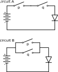
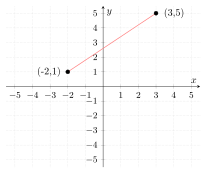
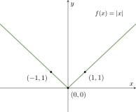
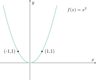
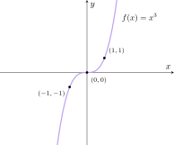
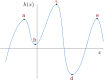

If we traced a mathematical field's development far enough down history, we would find its roots in human responses to external stimuli: Geometry and trigonometry grew out of land surveying and astronomy; algebra out of accounting; calculus out of describing the physical world. For some, development was driven by pressing problems. For others, pure curiosity. Regardless of motivation, we harnessed the ability to draw inferences from existing inferences. And it is precisely this ability that creates and enriches more complex mathematical fields — abstract algebra, number theory, algebraic geometry, topology, the list only grows.
But why mathematics? A realist would say we do not know. However, to the poetic mathematician, it is arguably because mathematics is the most human response to solving problems.
When we first encounter a problem, our first reaction is usually to describe it. For example, the Mesapotamians likely noticed that counting in their number system was difficult for large quantities of things. They may have then described the problem: Some numbers were so large that to express them required signaling the absence of a digit. The solution? Use a symbol to represent that absence (we now know this symbol as the number 0). Over time, as we studied the phenomenon of counting, and what 0 means and implies, we began noticing relationships to other ideas: ${x + 0 = x}$; ${0 \cdot x = 0}$; ${x/0 \implies \text{undefined}.}$
With enough relationships, we can create a mathematical model. To do so, we first start with definitions — statements explicitly assigning meanings to words or symbols. From those definitions, we produce axioms — statements that we presume true without proof (axioms are also referred to as postulates). In a sense, axioms are the basic assumptions from which we can draw conclusions, the very inferences that form relationships.
These conclusions are drawn through the the powerful tools of logical deduction. The conclusions are formally called theorems — statements that we know to be true from the axioms and definitions we started with.
It is at the theorem juncture that we have the great divide of mathematicians. One camp stops at the juncture, and its members return to the very start of the process to find more theorems elsewhere. These explorers are generally referred to as pure mathematicians. Another camp takes an additional step — applying the theorems to nature. They take the theorems, and use it in their analysis of data, information from reality. These adventurers are generally referred to as applied mathematicians.
While being a member of either camp is often fertile ground for jest ("applied mathematics is soft, pure mathematics is reality-detached"), restricting ourselves strictly to one or the other is naive. And in fact, most professional mathematicians will wade into the discoveries of the other camp, even if only in brief. The pure mathematician neglecting application may very well fail to see how her results conflict with the findings from the other camp; an observation that more often than not reveals errors in axioms and definitions, the very foundations of her theorems. The applied mathematician neglecting the work of pure mathematicians will end up misapplying theorems, or worse, attempting to prove theorems that have already been proven. In their toils, both waste the most valuable resource of all — human time.
For this reason, the materials that follow explore both purity and application. We will always begin with grounding axioms and definitions, occassionally with an observation from nature for context. We then work our way up to theorems, and end with applications. Following this procedure, we begin by defining mathematical language. More specifically, we will begin with an area more "reality-detached" than pure mathematics itself — the field of philosophy called logic.
Definitions in Mathematics
Philosophy has demonstrated time and time again that language grounds knowledge. And to comprehend language, we must know the meanings of the words we use — definitions. There is, however, a dilemma. When we define words, we use other words, and in many instances, we find that our definitions are circular. "Dead" means lifeless, "lifeless" means deprived of life, and "life" means the quality separating an organism from dead bodies. Mathematics suffers the same problem: a "point" is the common part of two intersecting lines, a "line" is the figure traced by a point moving along the shortest path between two points.
The solution: Take a smaller number of words and declare them undefined. This way, we have words that we can use to build definitions, without ever running into the problem of circularity. This medicament is unusual, and it often mildly sickens emigres at first dose. It is, however, what separates philosophy and mathematics from many other fields. Fortunately, time will accustom ourselves to it. As we proceed, whenever we encounter a word taken as undefined, we will explicitly state that it is undefined.
Whenever we construct definitions in mathematics, we must ensure that they meet the following criteria:
the definition describes something we have in mind;
the definition includes all of the cases we have in mind;
the definition excludes all other cases;
the definition is meaningful; and
the definition is consistent.
For example, we could define a square as "a shape that exists in space." This definition fails the first criterion. It merely tells us that there is such a shape, but it gives us no indication of what that shape is. It does not describe what we have in mind.
We could define a rectangle as "a four-sided polygon whose vertex angles are right angles, and whose sides are equal." This definition would fail the second criterion, because it excludes non-square rectangles — it does not include all of the cases we have in mind.
We may define a square as "a four-sided polygon with equal sides." This definition would fail the third criterion, because it would include rectangles and rhombuses, which are cases we did not have in mind. It does not exclude all other cases.
We could easily define a square as "a line line line line point point point point." This definition, however, fails the fourth criterion. It is not meaningful.
Similarly, we could easily define a square as "a four-sided polygon with five equal sides." This definition fails the fifth criterion. It is not consistent.
A better definition would be define a square as "a four-sided polygon is a square if, and only if, its sides are all equal and its vertex angles are all right angles. The italicized words are logical operators, restricting what constitutes a square to two conditions: (1) "sides are all equal," and (2) "vertex angles all right angles." The "if" tells us that any case satisfying the two conditions is a square, and the "only if" tells us that any case failing any one of those two conditions, is not a square. This definition effectively meets all of the criteria: it is descriptive, it includes all of the cases we have in mind and excludes all others, it is meaninful, and it is consistent.
Propositions in Mathematics
Once we have defined words, we can begin to form sentences with those words. If we think about the sentences we use daily, we might observe that there are two kinds, or classes, of sentences: sentences that can be said to be true or false, and sentences that can not. For example, the sentences "Koror is the capital of Palau," and "Dogs are mammals," are sentences that can be given the value true or false, and in fact, it is true. However, the sentence "The weather is nice today," is not a sentence that can be given the value true or false — a hot summer's day is heaven to those of us who surf, but it may very well be hell to our friends nursing hangovers.
Sentences that can ascribed the value true or false are called propositions. For example, the following statements are propositions in mathematics:
"The sum of the measures of the interior angles of any plane square is equal to 360 degrees." (True).
"A triangle consists of three lines and three points." (Vague).
"It is sunny outside." (Requires us to qualify place).
${x + 5 = 0}$. (Truth cannot cannot be determined until $x$ is given a value).
We state explicitly here that we've encountered some undefined terms, and they will remain undefined: sentences, true and false.
From these undefined terms, we state our first axioms:
There exists a class $C$ of sentences.
A sentence is a member of $C$ if, and only if, it can be assigned the words true or false.
The members of $C$ are called propositions.
Propositions can be assigned one, and only one, of the words true or false.
We will study what "class" and "members" are shortly.
Notation of Propositions
A common practice in mathematics, and many other fields, is to use notation. This is done as a matter of both efficiency and generalization. Accordingly, we represent propositions in mathematics with small letters, the most commonly used being $p$, $q$, $r$, $s$, and $t$.
We will also represent the values true and false with the capital letters T for true, and F for false. Both T and F are referred to as truth values. Thus, when we analyze a proposition $p$, we can say "$p$ has a truth value of T," or "$p$ has a truth value of F."
In some situations, we will also use the symbol verum for the truth value true: ${\top.}$ And the symbol falsum for the truth value false: ${\bot.}$
Axioms in Mathematics
One of chief tasks of mathematics — one might say the task of mathematics — is determining the truth values of propositions. This is done by (1) gathering the propositions whose truth values we have determined, then (2) using logic to derive, or evaluate, the truth values of other propositions.
However, this can only be done if we have some propositions to begin with. Moreover, those propositions, initial propositions, must be true. The trouble is, we cannot evaluate the truth value of these initial propositions because they are the propositions that ignite the whole process.
The solution: Assume the initial propositions to be true. Accordingly, let's make this clear with a definition. An axiom is an initial proposition assumed to be true.
Here is a famous axiom:
We hold these truths to be self-evident, that all men are created equal, that they are endowed by their Creator with certain unalienable Rights, that among these are Life, Liberty and the pursuit of Happiness ...
Basic Algebra
Algebra is a necessary component to any meaningful exploration of
mathematics. For this reason, we must have a strong grounding in
arithmetic rules and
algebraic rules before moving any
further.
Arithmetic Rules
There are four basic arithmetic operators:
Symbol
Operation
$a + b$
Addition
$a - b$
Subtraction
$a \times b$
Multiplication
$\dfrac{a}{b}$
Division
$a^b$
Exponentiation
Basic operations
In the tables above we used the letters $a$ and $b$. These are
called variables — simply
placeholders that we can plug numbers, other variables, or even
other operations with variables into. Variables allow us to
generalize, or
abstract, statements. For example,
$2 + 2 = 4$, and $3 + 8 = 11$. We make an abstraction of this
pattern, or idea, by writing something like $a + b = n$, which tells
us that, we can plug into $a$ and $b$ numbers we want, and the
result is another number, $n$.
Abstractions are useful because they allow us greater flexibility
and accuracy with our statements. Suppose we want to say, "I'm
looking for two numbers that add to 10." We can write: $a + b = 10$.
This flexibility and accuracy is a powerful tool in mathematics,
because it gives us plenty of room to write statements that say what
we can and cannot do — rules.
Understanding the basic rules of arithmetic at a very high level is
priceless in mathematics. Part of the elegance and power of
mathematics is that we can arrive at beautiful, and often shocking,
results from a set of very basic rules.
Addition
Addition can be thought of as moving to the right along the real
number line by whatever number we are adding. So, for example, the
expression $4 + 2$ can be thought of as "Start at 4, and move 2 to
the right." This give us the final destination of 6. Subtraction is
really just addition, only instead of moving towards the right, we
move towards the left. For example, $4 - 3$ is really $4 + (-3)$,
returning 1. Visually:
Addition with Zero
When we add 0 to a number, we are effectively saying "no movement."
Thus:
$0 + a = a + 0 = a$
Subtraction
As aforementioned, subtraction is really just adding negative
numbers. Considering the addition with zero rule, we have the
following inference:
$a + (-a) = 0$
$-a + a = 0$
Given the equation $a + (-a) = 0$, we say that $-a$ is the
additive inverse of $a$.
Whenever we see the equation $-a + a = 0$, we should immediately
become aware that we $a$ and $-a$ are on opposite sides of 0 on the
real line. Furthermore, because $-a + a = 0$, subtracting $-a$ from
both sides, we have $-a = -(-a)$.
Commutative Law of Addition
The commutative law of addition states that:
$a + b = b + a$
In other words, the order of terms in addition does not change the
sum of those terms.
Associative Law of Addition
The associative law of addition states that the sum of the terms
does not depend on the order of operations. In other words, we can
group terms freely:
(a + b) + c = a + (b + c)
The idea is made apparent from a simple analogy. If we want sweet
iced tea, we can add the tea, then the ice, then the sugar; or we
can add the sugar, then the ice, then the tea; or we can add the
tea, then the sugar, then the ice, or we can add the sugar, then the
tea, then the ice; either or, the result is the same — sweet
iced tea.
The associative law of addition leads to another useful property:
If $a + b = 0$, then $b = -a$ and $a = -b$.
The above property is the direct result of subtracting either $a$ or
$b$ from both sides. Combining commutativity and associativity, we
have the following result:
$(a - b) + c = (a + (-b)) + c$
$\phantom{(a - b) + c} = a + (-b + c)$ by associativity
$\phantom{(a - b) + c} = a + (c - b)$ by commutativity
$\phantom{(a - b) + c} = (a + c) - b$ by associativity
Even-Odd Rule of Minus Signs
Given that $a + (-a) = 0$, we can draw yet another inference:
$a = -(-a)$
Notice that the number of minus signs is even. If we add another
minus sign:
$-(-(-a)) = -(a) = -a$
Thus, we can make yet another inference:
Let $a$ be a positive real number, and $x$ be $a$ preceded by
$n$ minus signs, where $n$ is an integer. If $n$ is even, then
$x$ is positive (i.e., $a$). If $n$ is odd, then $x$ is negative
(i.e., $-a$).
The Distributive Law
With the rules thus far, we can make even further inferences. We
know that, if ${ a + b = 0 }$, then ${ a = -b }$ and ${ b = -a }$.
Thus, if ${ a + b = 0 }$, then it must be true that ${ (a + b) + (-a
- b) = 0 }$, since ${ a + b = 0 }$ and ${ -a - b = 0 }$. If ${ (a +
b) + (-a-b) = 0 }$, then it follows that ${ a + b - a -b = 0 }$.
Rearranging the equation, we have ${ a - a + b - b = 0 }$.
Rearranging again, we have: ${ -(a + b) = -a + (-b) }$. This yields
the following inference:
${ -(a + b) = -a - b }$.
We know this rule as the
distributive law. Note that we
should always be vigilant about distributing a minus sign to a sum
involving negative numbers: ${ -(-a) = a }$. To ensure that
vigilance, we should make the following rules clear:
If ${ a }$ and ${ b }$ are positive integers, then ${ a + b }$
is a positive integer.
If ${ a }$ and ${ b }$ are negative integers, then ${ a + b }$
is a negative integer.
We can see that these rules are true with a simple proof. Let ${ a =
-n }$ and ${ b = -m }$, where ${ m }$ and ${ n }$ are positive. It
follows then that ${ a + b = -n - m = -(n + m) }$. Since ${ n }$ and
${ m }$ are positive, ${ n + m }$ is positive. Since ${ n + m }$ is
positive, it follows that ${ a + b }$ is negative, because ${ n + m
}$ is positive only if ${ a + b }$ is negative.
Three Number Relationships
Suppose we know the following relationship:
${ a + b = c }$
Three number relationships are ripe for inferences. If we add ${ -b
}$ to both sides of the equation, we obtain ${ a + b - b = c - b }$.
Simplifying, we have ${ a + 0 = c - b }$. We can then infer:
Prove: ${ (a + b) + (c + d) = (a + d) + (b + c) }$
${ (a + b) + (c + d) = (a + b + c + d) }$ by associativity
${ \phantom{(a + b) + (c + d)} = (a + d + b + c) }$ by
commutativity
${ \phantom{(a + b) + (c + d)} = (a + d) + (b + c) }$ by
associativity
Prove: ${ (a + b) + (c + d) = (a + c) + (b + d) }$
${ \phantom{(a + b) + (c + d)} = (a + b + c + d) }$ by
associativity
${ \phantom{(a + b) + (c + d)} = (a + c + b + d) }$ by
commutativity
${ \phantom{(a + b) + (c + d)} = (a + c) + (b + d) }$ by
associativity
Prove: ${ (a - b) + (c - d) = (a + c) + (-b - d) }$.
Following the rule ${ n - m = n + (-m) }$, ${ (a - b) + (c -
d) = (a + (-b)) + (c + (-d)) }$.
Then, by associativity, ${ (a + (-b)) + (c + (-d)) = a + (-b)
+ c + (-d) }$.
By commutativity, ${ a + (-b) + c + (-d) = (a + c) + ((-b) +
(-d)) }$.
Following the rule ${ n - m = n + (-m) }$, it follows that ${
(a + c) + ((-b) + (-d)) = (a + c) + (-b - d) }$.
Thus, ${ (a - b) + (c - d) = (a + c) + (-b - d) }$.
The Cancellation Law for Addition
Suppose we have the following relationship:
${ a + b = a + c }$
Subtracting ${ a }$ from both sides, we have ${ a + b - a = a + c -
a }$. Simplifying, we have: ${ b = c }$. This inference is called
the cancellation law for addition:
If ${ a + b = a + c }$, then ${ b = c }$.
Multiplication
Integers can be multiplied. Whenever we multiply integers, the
following rule holds true:
The product of two integers is an integer.
Commutative Law of Multiplication
The commutative law also extends to multiplication:
$a \cdot b = b \cdot a$, or with parantheses,
$(a)(b) = (b)(a)$
Associative Law of Multiplication
The associative law also extends to multiplication:
${ (ab)c = a(bc) }$
The laws of commutativity and associativity apply whether ${ a }$,
${ b }$, and ${ c }$ are negative, positive, or 0.
Multiplication by 0
The following rule applies to multiplication:
${ 0a = 0 }$
Multiplication by 1
The following rule also applies to multiplication:
${ 1a = a }$
The above rules allow us to perform elaborate simplifications:
${ (2a)(5b) = 2(a(5b)) }$ by associativity
${\phantom{ (2a)(5b) } = 2(5a)b }$ by commutativity
The above example represents a useful technique when handling
expressions involving multiple factors: group all of the integers
into a single multiplication expression, and all of the variables
elsewhere.
Let's cover some rudimentary rules and definitions about numbers. We
will often revisit these topics over and over again, as numbers
cannot be avoided in mathematics.
Integers
The integers are the whole numbers
we use for counting, and their opposities:
The numbers greater than 0 are called the
positive integers:
$ 1, 2, 3, 4, \ldots $
The positive integers
The numbers less than 0 are called the
negative integers:
$ \ldots , -4, -3, -2, -1$
The negative integers
The number 0 is neither negative nor positive. It is both a nonpositive and
nonnegative number. Thus, the
nonpositive integers are the
negative integers including 0:
$ \ldots , -4, -3, -2, -1, 0$
The nonpositive integers
and the nonnegative integers are
the positive integers including 0:
$ 0, 1, 2, 3, 4, \ldots$
The nonnegative integers
Rational Numbers
When we divide one integer by another
nonzero integer, we get a
rational number. More specifically,
if, and only if, a number can be written in the form $\frac{a}{b}$,
where $a$ is an integer and $b$ is a nonzero integer, then the
number is a rational number. For example, 4 is a rational number,
since 4 can be written as $\frac{4}{1}$. 0.5 is a rational number,
since it can be written as $\frac{1}{2}$.
Irrational Numbers
If a number cannot be written in the form $\frac{a}{b}$, where $a$
is an integer and $b$ is a nonzero integer, then the number is an
irrational number. For example, the
number $\pi$ is an irrational number, because it cannot be written
in the form $\frac{a}{b}$.
Real Numbers
All of the numbers above are called
real numbers. In the simplest
terms, a real number is a number
that can be written as a decimal. Thus, 7 is a real number, since $7
= 7.0$. Similarly, while $pi$ is an irrational number, it is a
real number since it can be written
as a decimal ($3.14 \ldots$), albeit non-terminating.
Imaginary Numbers
Outside of the real numbers, we have the imaginary numbers. These
are the numbers that result from operations such as $\sqrt{-1}$.
These will be covered in more detail later on.
The Decimal System
Real numbers are written in
decimal notation. This is the
prevailing standard (with the exception of
binary, which is favored by
computers). The decimal system is useful because it allows us to
quickly add numbers through the process of
carrying over. For example:
Carrying and borrowing
Multiplication
The multiplication algorithm allows us to compute large numbers
without the need for memorization. For example, $17 \times 38$:
Now note that there is a 4 that must be carried to the next place.
To keep the sum's digits 0, we need a sum of 8s and a 4 that returns
the last digit 0. We know that $8 + 8 + 4 = 20$. Further, we need
one more 8 to get a 10:
The $A$s denote some digit, the $B$s denote another digit, and $C$ denotes a third digit. What are these digits?
Solution
To start, we are looking for a number where $A + B = nC$, where $n$
and $C$ are digits. Furthermore, $A + B + n = mA$, where $m$ and $A$
are digits. Then, $m + A + B = AAA$.
First, we note that $A + B$ must result in a two digit number.
Second, we further note that $A$ appears in the thousands position
of the result ($AAAC$). Because $A$ appears in the thousands place,
no other digit can be carried over into the thousands place.
There is only one number for $B$ that can satisfy these conditions
— 9.
Exercise. Daniel claims that he can multiply any three-digit number by 1001 instantly. If his friend, Helga, says to him, "715" he gives the answer immediately. Compute his answer and explain Daniel's secret.
Solution
First, $715 \times 1001 = 715715$. We can see this with the
multiplication algorithm:
Under the multiplication algorithm, Daniel simply takes the three
digits, ABC, and performs the following:
$C00C$
$B00B$
$A00A$
Then, he adds the numbers, shifting one place to the left on each
line:
$$ \begin{array}{cc} & & & C & 0 & 0 & C \\ & & B & 0 & 0 & B \\ + &
A & 0 & 0 & A \\ \hline & A & B & C & A & B & C \end{array} $$
The result then is $ABCABC$, a repetition of the digits $ABC$. Note
further that there are two 0s, and the digits are repeated twice.
Exercise. Compute $1010101010 \times 57$.
Solution
The multiplication algorithm tells us that we are simply shifting
the number 57 over and over, but, with an added 0, since the the
first place does not shift:
Among the operations, division is the most complicated.
Exercise. A six-digit number having 1 as its leftmost digit becomes three times bigger if we take this digit off and put it at the end of the number. What is this number?
Solution
Let the number be $1ABCDE$.
Then, $ABCDE1 = 3 \times 1ABCDE$.
Rewrite this with the multiplication algorithm:
$$ \begin{array}{cc} & A & B & C & D & E \\ \times & & & & & 3 \\
\hline A & B & C & D & E & 1 \end{array} $$
Let's focus on $E$. We need a digit $E$ where $3 \times E = n1$,
where $n$ is a digit. This digit must be 7, for $7 \times 3 = 21$.
We know that $E$ is 7, so what might $D$ be? Well, we need a digit
$D$ where $(D \times 3) + 2 = 7$. Or, rearranging, $D \times 3 = 5$.
The only digit that would satisfy this condition is $D = 5$ (since
$3 \times 5 + 2 = 17$.
We know that $D$ is 5, so now we look at $C$. We need a digit $C$
such that $(C \times 3) + 1 = 5$, or, rearranging, $C \times 3 = 4$.
There is only one digit that satisfies this condition, 8. Thus, $C =
8$.
Now we look at $B$. What digit satisfies the condition $B \times 3 =
6$? It must be 2. Therefore, $B = 2$.
Finally, we look at $A$. What digit results in $A \times 3 = 12$. It
must be 4, since $3 \times 4 = 12$. Hence, the digits are $A = 4$,
$B = 2$, $C = 8$, and $D = 5$.
Arithmetic allows us to combine numbers, through the operations listed above, to form other numbers. The way we order operations matters in mathematics. Otherwise, we run into problems. For example, consider the following:
$2 + 3 \times 4$
Multiple operations
What does this expression mean? Well, it could be: (1) Add 2 and 3, then (2) multiply the sum by 4. Or, it could mean: (1) Multiply 3 and 4, and (2) add 2 to the product. This ambiguity is unacceptable in mathematics. We need be clear and precise with our words. For these reason, mathematics follows a few conventions on how to write mathematical expressions:
Evaluate expressions in parentheses first, working from the
inner most to the outer most, applying all of these rules.
Perform all exponentiations.
Perform all multiplications and divisions from left to right.
Perform all additions and subtractions from left to right.
The order of operations
The conventions above are collectively called the order of operations. Again, these are conventions. They are not universal truths; they're simply what mathematicians have come to agree to about how mathematics is communicated and understood.
Operations as Trees. One way to think about the order of operations is that it is a way for us to distinguish between different "trees" (the diagrams below are called binary trees, to be covered in further detail in later sections). For example, suppose we had the following expression:
${2 \times 4 + 6}$
Without the order of operations, the expression above could be $(2 \times 4)+6$, which can be visualized as:
Or, it could be $2 \times (4+6)$:
The order of operations tells us that we perform additions and subtractions from left to right, so the "correct" tree is $(2 \times 4) + 6$, the first tree. Really, the order of operations is governed by one rule, evaluate expressions inside the parentheses first, and the remaining rules tell us where to place parentheses when they are absent. The parentheses, in turn, allow us to distinguish between different trees.
Euclidean Geometry
Preface
Studying Euclidean geometry in foundational mathematics is a tradition that dates back to the Ancient greeks. As a nod to this tradition, we explore the material in the following sections.
Basic Definitions
The simplest figure in geometry is a point. All figures in geometry consist of points. The set of all points is called space. A point does not have a size, but it is represented by a dot. We generally name points with capital letters. Points placed contiguously form a line, which extends in two opposite directions without ending. We denote a line with an italicized or cursive lower case letter (e.g., $\ell$):
Points on the same line, such as $A$ and $B$ above, are said to be collinear. Points that are not on the same line are noncollinear.
A plane is a flat, two-dimensional surface, consisting of points, that extends infinitely in all directions. Like points, we denote planes with a capital letter (e.g., Plane N). We can visualize a plane as:
Points on the sample plane are described as coplanar, while points not on the sample plane are noncoplanar.
When to figures (whether a plane or a line) meet, or cut one another, they are said to intersect. The intersection of two figures is the set of points that are in both figures:
The beauty of Euclidean geometry is that it begins with just a few definitions and axioms, then deduces increasingly complex conclusions, or theorems, from those axioms. The first definition we cover is a line segment. Given two points, $A$ and $C$, all of the points between $A$ and $C$, including the endpoints $A$ and $C$, form a line segment. We denote the line segment as ${\overline{\rm AC}.}$ Visually:
Given a point $A$, a ray is a part of a line beginning with point $A$, with no endpoint. We represent rays with an overline right arrow: ${\overrightarrow{\rm AB}.}$ Visually:
The Ruler Postulate
The Ruler Postulate states: The points on a line can be paired with real numbers, such that any two points can have coordinates 0 and 1. Given coordiantes, the distance between two any two points is the absolute value of the difference of their coordinates.
The Segment Addition Postulate
The Segment Addition Postulate states: Given a point $B$ between points $A$ and $C$, ${\overline{\rm AB} + \overline{\rm BC} = \overline{\rm AC}.}$
Two objects that have the same size and shape are congruent. Thus, congruent segments are segments that have equal lengths. If two segments, ${\overline{\rm AB}}$ and ${\overline{\rm CD}}$, have equal lengths, we write ${\overline{\rm AB} = \overline{\rm CD}.}$ If the segments are congruent, we write ${\overline{\rm AB} \cong \overline{\rm CD}.}$ Note that these two terms are equivalent for line segments. If ${\overline{\rm AB}}$ has the same length as ${\overline{\rm BC},}$ it follows that ${\overline{\rm AB}}$ and ${\overline{\rm CD}}$ are congruent to one another.
The bisector of a segment is a line, segment, ray, or plane that intersects a line segment at its midpoint:
In the figure above, the ray ${\overrightarrow{\rm CD}}$ bisects the segment ${\overline{\rm AB}.}$ Where the the bisector intersects the line segment is the midpoint of the line segment.
Angles
An angle is the figure resulting from two rays extending from the same endpoint. The two rays are called the sides of the angle, and their common endpoint is called the vertex of the angle:
In the figure above, the angle $\theta$ is formed from the rays ${\overrightarrow{\rm BA}}$ and ${\overrightarrow{\rm BC}.}$ We denote angles with a miniature angle, followed by the angle's name, or, three points forming the angle, or the vertex. E.g., ${\angle \theta}$ or ${\angle ABC}$ or ${\angle B.}$
Angles are measured relative to a circle centered at the angle's vertex. The units of measurement are either degrees or radians. In degrees, a circle has a total of 360 degrees (${360^\circ}$). In radians, a circle has a total of ${2 \pi}$ radians (${2 \pi \text{ rad.}}$) Following these units, angles are classified into various types. Suppose that $\theta$ is an angle:
${\dfrac{\pi}{2} \text{ rad } < \theta < \pi \text{ rad}}$
Straight Angle
${\theta = 180^\circ}$
${\theta = \pi \text{ rad}}$
Congruent angles are angles that have equal measures. Given an ${\angle \theta}$ and ${\angle \phi,}$ if the angles have equal measures (i.e., congruent), we denote the relationship with: ${\angle \theta = \angle \phi}$ or, ${\angle \theta \cong \angle \phi.}$
Adjacent angles are two angles in a plane that have (1) a common vertex, (2) a common side, and (3) no common interior points.
In the diagram above: ${\angle f \cong \angle g,}$ ${\angle a \cong \angle b,}$ ${\angle p \cong \angle q,}$ ${\angle p \ncong \angle r,}$ and ${\angle w \ncong \angle v.}$
Protractor Postulate
Given a line ${\overleftrightarrow{\rm AB}}$ on a plane, choose any point $O$ between $A$ and $B.$ Consider ${\overrightarrow{\rm OA}}$ and ${\overrightarrow{\rm OB}}$ and all the rays that can be drawn from $O$ on one side of ${\overleftrightarrow{\rm AB}.}$ These rays can be paired with the real numbers from 0 to 180 in such a way that: (1) ${\overrightarrow{\rm OA}}$ is paired with 0, and ${\overrightarrow{\rm OB}}$ is paired with 180. (2) If ${\overrightarrow{\rm OP}}$ is paired with $x$, and ${\overrightarrow{\rm OQ}}$ is paired with $y$, then ${m \angle POQ = \lvert x - y \rvert. }$
Angle Addition Postulate
If a point $B$ lies in the interior of ${\angle AOC,}$ then ${m \angle AOB + m \angle BOC = m \angle AOC.}$
If ${\angle AOC}$ is a straight angle and $B$ is any point not on ${\overleftrightarrow{\rm AC},}$ then ${m \angle AOB + m \angle BOC = 180,}$ or ${m \angle AOB + m \angle BOC = \pi \text{ rad}.}$
Discrete Mathematics
Discrete mathematics is the mathematics of discrete and finite mathematical objects. Mathematical objects are abstract concepts — concepts like numbers, functions, triangles, matrices, groups, vector spaces, series, etc. Unlike what we might think of when we hear the word "object" — maybe a car, a table, or a molecule — mathematical objects are not physical. They do not move; they do not change over time; and they do not physically interact with real world entities.
We can classify mathematical objects into two categories: (1) discrete (i.e., finite) and (2) continuous (i.e., infinite). Discrete mathematics is a branch of mathematics separate from continuous mathematics, which concerns infinite, or continuous, mathematical objects. This difference might seem vague at the moment, but this is expected. The distinction can only be clarified with experience in both areas.
All ideas in mathematics, discrete or continuous, are discovered1 through logic. Accordingly, a strong logic background is invaluable to any serious student of mathematics. As we study logic, we might find ourselves asking questions about knowledge and truth. Play with those questions. They are a strong indicator of encountering a link between philosophy and mathematics. Because these questions are excellent opportunities for deeper and playful thinking, the text will occassionally present difficult questions that may or may not have any clear answers.
1 Are mathematical ideas discovered or created?
Variables & Statements
Variables. In mathematics, we use variables as placeholders, or temporary names. Variables allow us to both abstract problems and perform concrete computations of abstractions. For example: "Is there a number where tripling it and adding one is the same as squaring?" While this may seem verbose for some, it was how mathematics was done up until the 16th century — most everything was in prose. Queue the variable:
${ 3x + 1 = x^2 }$
The above equation reduces a string of 72 characters down to just 12, while retaining the original string's meaning. Variables are indispensible to mathematics and related fields like computer science.
Examples
"Are there numbers with the property that the sum of their
squares equals the square of their sum?"
Are there numbers $a$ and $b$ such that $a^2 + b^2 = (a+b)^2$
?
"Given any real number, its square is nonnegative."
For any real number $x$, $x^2 \geq 0$.
Universal Statements.A universal statement is a statement that claims: A certain property is true for all elements in a set.
For example, "All negative numbers are less than 0." This is a universal statement. It states a property, "less than 0," is true for all elements in a set, "all negative numbers." Universal statements are used beyond mathematics as well. "All cats are mammals" is another example.
Conditional Statements. A conditional statement is a statement that claims: If one thing is true, then some other thing must also be true.
For example, the statement "If a number is divisible by 6, then it is also divisible by 3," is a conditional statement. We use conditional statements all the time: "If I do my homework, then I can play Madden."
Existential Statements. An existential statement is a statement that claims, "There is at least one thing for which this property is true." That property may or may be true for all things, but the existential statement says, "Maybe not for all, but there is at least one."
For example, "There is a prime number that is even." This is an existential statement, since it claims that there is at least one thing, "a prime number," for which the property, "is even", is true. Another example: "Some people hate mayonnaise" is an existential statement, since it claims that there is at lease one person who hates mayonnaise.
Universal Conditional Statements. A universal conditional statement is a statement that claims: "For all of these things, if this is true, then that is true." In other words, the universal conditional is a statement that is both conditional and universal.
For example, "For all U.S. citizens, if a citizen is not at least 18, then the citizen cannot vote" is a universal conditional statement. It contains a universal statement, "For all U.S. citizens," and a conditional, "if a citizen is not at least 18, then the citizen cannot vote."
Universal Existential Statements. A universal existential statement is a statement that claims: "For all of these particular things, there is a property that is true for them."
For example, the statement, "Every real number has an additive inverse" is a universal exisential statement. It claims that for all these particular things ("real numbers"), there is a property ("has an additive inverse"), that is true for them. Another example: "All humans need sleep." The statement is universal ("all humans"), and it asserts the existence of something ("sleep").
Existential Universal Statements. An existential universal statement is a statement that claims: "There is a thing that satisfies a property for all things of a particular kind." The statement asserts existence (there is a thing), and it asserts universality (a property of all things).
For example: "There is a positive integer that is less than or equal to every positive integer." This is an existential universal statement. Another example: "There is a chemical that is toxic to all people."
Set Theory
In mathematics, a set is a collection of elements. For example, the set of all coins includes nickels, sterling, and yen. The set of all countries includes Japan, Palau, and Uruguay. The set of all integers includes 1 and -117. We can visualize a set as:
Sets can be finite (there are only so many countries), or infinite (there are infinitely many of numbers).
Set Roster Notation. To more efficiently discuss sets, mathematicians have come up with set notation. Let's go over some of the most common notation.
Suppose that $S$ is a set. The notation $x \in S$ means "$x$ is an element of $S$." A set may be made more explicit through set roster notation. For instance, $\{ 0, 1, 2 \}$ is a set containing the elements 0, 1, and 2. If the set has too many elements to list, ellipses may be used. For example, the set of all integers from 0 to 100 may be written as: $\{ 0, 1, 2, \ldots , 100 \}$. Likewise, the set of all positive integers may be written as $\{ 1, 2, 3, \ldots \}$.
Set Builder Notation. We can also specify sets in set builder notation. Suppose that $S$ is a set, and $P(x)$ is a property that elements of $S$ may or may not satisfy. We can define a new set that contains all the elements of $S$ such that $P(x)$ is true:
${ \{ x \in S \mid P(x) \} }$
The pipe character, |, is shorthand for "such that." Thus, above notation refers to all the elements of $S$ with the property $P(x)$. Note that in some mathematical contexts, the phrase "such that" is often abbreviated "s.t." or $\ni$. Thus, the above set may appear in some texts as:
$$ \{ x \in S \ni P(x) \}, \space \text{or} \\[1em] \{ x \in S \text{ s.t. } P(x) \} $$
The Axiom of Extension. The axiom of extension provides that a set is completely determined by what its elements are — it is irrelevant whether the elements are in order, or whether an element is listed more than once.
For example, the set $\{ 1, 2, 3 \}$ is the same as the set $\{ 2, 1, 3 \}$, and the same set as $\{ 2, 2, 3, 1 \}$.
Subsets. Some sets are themselves elements of another set. These sets are called subsets. More formally, suppose $A$ and $B$ are sets. The set $A$ is a subset of $B$ if, and only if, every element of $A$ is also an element of $B$. To denote this relationship, we write:
$$ A \subseteq B $$
If $A \subseteq B$ is true, then we can infer: For every element $x$, if $x \in A$, then $x \in B$. We describe $A$ and $B$'s relationship with statements such as "$A$ is contained in $B$" and "$B$ contains $A$."
If $A$ is not a subset of $B$, then we write:
$$ A \nsubseteq B $$
If $A \nsubseteq B$ is true, then we can infer: There is at least one element $x$ such that $x \in A$ and $x \notin B$. In other words, if $A$ is not a subset of $B$, then there is at least one element in $A$ that is not an element of B.
Proper Subsets. Suppose that $A$ and $B$ are sets. $A$ is a proper subset of $B$ if, and only if, every element of $A$ is in $B$, but there is at least one element in $B$ that is not in $A$. If $A$ is a proper subset of $B$, we write:
$$ A \subset B $$
If $A \subset B$ is true, we can infer: All of the elements of $A$ are elements of $B$, but there is at least one element of $B$ that is not an element of $A$.
If $A \subset B$ is false (i.e., $A$ is not a proper subset of $B$), we write:
${ A \not\subset B }$
If $A \not\subset B$ is true, then either $A \not\subseteq B$ is true, or $A \subseteq B$ is true, but no elements in $B$ are not in $A$.
Problems
Let $A = \{ 1, 2, 3 \}$, $B = \{ 3, 1, 2 \}$, and $C = \{ 1, 1,
2, 3, 3, 3 \}$. What are the elements of $A$, $B$, and $C$? How
are $A$, $B$, and $C$ related?
The elements of $A$, $B$, and $C$ are the numbers 1, 2, and 3.
They are related in that they have the same elements.
Is $\{ 0 \} = 0$?
No. $\{ 0 \} \neq 0$. $\{ 0 \}$ is a set containing the number
0, while 0 is itself the number 0. A set is a collection of
things, not a number.
How many elements are in the set $\{ 1, \{ 1 \} \}$?
The set $\{ 1, \{ 1 \} \}$ contains two elements: the number
1, and the set $\{ 1 \}$.
For each nonnegative integer $n$, let $U_n = \{ n, -n \}$. Find
$U_1, U_2, U_0$.
$U_1 = \{ 1, -1 \}$
$U_2 = \{ 2, -2 \}$
$U_0 = \{ 0, -0 \} = \{ 0, 0 \} = \{ 0 \}$
Special Number Sets
Certain number sets are used so frequently in mathematics that we denote them with symbols.
Symbol
Set
$\mathbb{R}$
The set of all real numbers. E.g., $\{ -2, 0, 1, \pi,
\sqrt{2}, \ldots \}$
$\mathbb{R}^-$
The set of all negative real numbers. E.g., $\{ - \sqrt{3},
-1, -117, \ldots \}$. This set does not include 0.
$\mathbb{R}^{\text{nonpos}}$
The set of all nonpositive real numbers. This is the set of
negative real numbers including 0.
$\mathbb{R}^+$
The set of all positive real numbers. E.g., $\{ 2, \pi, e,
\frac{1}{2}, \ldots \}$. This set does not include 0.
$\mathbb{R}^{\text{nonneg}}$
The set of all nonnegative positive real numbers. This is
the set of all positive real numbers including 0.
$\mathbb{Q}$
The set of all rational numbers. These are numbers that can
be expressed as $\frac{a}{b}$, where $a$ and $b$ are
integers. E.g., $\{ 3, 0, -2, 0.75, \ldots \}$.
$\mathbb{I}$
The set of all irrational numbers. This is the set of all
numbers that are not rational numbers. E.g., $\{ - \sqrt{2},
\pi, \phi, e, \ldots \}$.
$\mathbb{Z}$
The set of all integers. This is the set of what we refer to
as the counting numbers, and their negative counterparts.
E.g., $\{ \ldots -3, -2, -1, 0, 1, 2, 3, \ldots \}$.
$\mathbb{Z}^-$
The set of all negative integers. This is a subset of
$\mathbb{Z}$. It consists of all the negative integers.
E.g., $\{ -1, -2, -3, \ldots \}$. This set does not include
0.
$\mathbb{Z}^+$
The set of all positive integers. Another subset of
$\mathbb{Z}$. It consists of all the positive integers.
E.g., $\{ 1, 2, 3, 4, \ldots \}$. This set does not include
0.
$\mathbb{Z}_{\text{even}}$
The set of all even integers. This is the set of all
integers that can be written in the form $2k$, where $k$ is
an integer. E.g., $\{ 0, 2, 4, 6, 8, 10 \}$.
$\mathbb{Z}_{\text{odd}}$
The set of all odd integers. This is the set of all integers
that can be written in the form $2k + 1$, where $k$ is an
integer. E.g., $\{ 1, 3, 5, 7, 9, \ldots \}$
$\mathbb{N}$
The set of all natural numbers. This is the set of all
counting numbers (equivalent to the set of positive
integers). E.g., $\{ 1, 2, 3, 4, \ldots \}$.
$\mathbb{P}$
The set of all prime numbers. E.g., $\{ 2, 3, 5, 7, \ldots
\}$.
The Number Line. We usually think of numbers as lying along a number line.
The number 0 is the middle point of the number line, and because of that property, we refer to it as the origin. Every number to the left of 0 is a a negative number. Every number to the right is a positive number. 0 itself is neither positive nor negative.
The real number line is continuous because it has no holes (i.e., areas where there is nothing). There are points all along the number line. Thus, whenever we refer to a set of numbers (e.g., the integers, the rationals, the naturals, etc.), we are referring to those points along the number line corresponding to those numbers.
Some of the numbers are separated from one another at specific, constant distances. For example, the set of integers consists of numbers separated by exactly 1 unit of distance. Because the integers are all separated from one another, we say that the set of integers is discrete. This is where the name of discrete mathematics comes from. Discrete mathematics is the study of discrete mathematical objects, while continuous mathematics is the study of continuous mathematical objects.
Ordered Pairs
When set theory was first introduced, it faced a major issue — how do you represent ordered pairs? The axiom of extension renders order irrelevant for defining sets. For example, $\{ a, b \}$ is the same set as $\{ b, a \}$. This is problematic if we are referring specifically to "$a$ then b", rather than "$b$ then $a$."
The patch was to define ordered pairs as sets. An ordered pair is a set of the form $\{ \{ a \}, \{ a, b \} \}$. The set has two elements: $\{ a \}$ and $\{ a, b \}$. If $a \neq b$, then the two sets are distinct, and $a$ is in both sets but $b$ is not. With this definition, we can differentiate between $a$, and $b$. If $a = b$, then we can say that $a$ is both the first and second element of the pair.
Eventually, however, mathematicians learned that writing $\{ \{ a \}, \{ a,b \} \mid a = b \}$ was too cumbersome. So, the syntax was shortened: $(a, b)$.
Formalizing the discussion above: Let $a$ and $b$ be elements. The notation $(a, b)$ means the ordered pair consisting of $a$ and $b$ together, such that $a$ is the first element of the pair and $b$ is the second element.
Equality of Ordered Pairs. Suppose $(a, b)$ and $(c, d)$ are ordered pairs. The ordered pairs are equal if, and only if, $a = c$ and $b = d$. Thus, the statement $(a, b) = (c, d)$ implies that $a = c$ and $b = d$.
Tuples
Suppose $n \in \mathbb{Z}^+$. Let $x_1, x_2, \ldots x_n$ be elements. The ordered $n$-tuple consists of $x_1, x_2, \ldots x_n$, with the ordering: first $x_1$, second $x_2$, and so on up to $x_n$.
An ordered 2-tuple is an ordered pair, and an ordered 3-tuple is an ordered triple.
Two ordered $n$-tuples ($x_1, x_2, \ldots x_n$) and ($y_1, y_2, \ldots y_n$) are equal if, and only if, $x_1 = y_1$, $x_2 = y_2$, $\ldots$, $x_n = y_n$.
Cartesian Products. Given sets $A_1, A_2, \ldots , A_n$, the Cartesian product of $A_1, A_2, \ldots , A_n$, denoted $A_1 \times A_2 \times \ldots \times A_n$, is the set of all ordered $n$-tuples $(a_1, a_2, \ldots , a_n)$, where $a_1 \in A_1, a_2 \in A_2, \ldots , a_n \in A_n$.
$(A \times B) \times C = \{ ((x,1), a), ((x,1), b), \} $
${\R \times \R.}$ $\mathbb{R} \times \mathbb{R}$ is the Cartesian product — the set of all ordered pairs — $(x, y)$ where both $x$ and $y$ are real numbers. If we assign every $x$ to a point on a line and every $y$ to a point on another line perpendicular to $x$'s line, the lines form a plane. That plane is called the Cartesian plane, and every ordered pair $(x, y)$ lies on it.
Strings
Suppose that $n$ is a positive integer. Given a finite set $A$, a string of length $n$ over $A$ is an ordered $n$-tuple of elements of $A$ written without parantheses or commas. The elements of $A$ are called the characters of the string.
The null string over $A$ is the string with no characters. It is denoted $\lambda$, and is described as having length 0. If ${ A = \{ 0,1 \} }$, then a string over $A$ is a bit string.
Relations
As humans, we perceive the world according to the way things relate to one another. Corporate hierarchy, family relationships, friend networks, court systems, if-then, if-and-only-if, cause and effect, these are all relationships. Mathematical objects are no different — they too have relationships to other mathematical objects. The set $A$ is related to the set $B$ if ${ A \subseteq B }$. The number $a$ is related to the number $b$ if ${ a < b }$, or if ${ a^2 + b^2 = 1 }$.
In mathematics, if a mathematical object $x$ is related to a mathematical object ${y,}$ we write:
${ x \mathrel{R} y }$
To denote "$x$ is related to $y$." If $x$ is not related to $y$, we write:
${x \not\mathrel{R} y }$.
For example, suppose we have two sets: ${A = \{ 0, 1, 2 \}}$ and ${B = \{ 1, 2, 3 \}}$. Suppose that an element ${a \in A}$ is related to an element ${b \in B}$, if, and only if, ${a < b}$. From this rule, we can infer: ${0 \mathrel{R} 1}$ since ${0 < 1}$; ${0 \mathrel{R} 2}$, since ${0 < 3}$; ${1 \mathrel{R} 2}$, since ${1 < 2}$; ${1 \mathrel{R} 3}$, since ${1 < 3}$; and ${2 \mathrel{R} 3}$ since ${2 < 3}$. But: ${1 \not\mathrel{R} 1}$, since ${1 \nless 1}$; ${2 \not\mathrel{R} 1}$, since ${2 \nless 1}$, and ${2 \not\mathrel{R} 2}$, since ${2 \nless 2}$.
Cartesian Products and Relations. Recall: Given two sets $A$ and $B$, the Cartesian product ${A \times B}$ is the set of all ordered pairs ${(x, y)}$ such that ${x \in A}$ and ${y \in B}$. Or, more formally:
${A \times B = \{ (x,y) \mid x \in A \text{ and } y \in B \}}$.
If we know what ordered pairs are members of ${A \times B}$, then we know which elements of $A$ are related to which elements of $B$ and vice versa. More formally, suppose $A$ and $B$ are sets. A relation $R$ from $A$ to $B$ is a subset of ${A \times B}$. Or, in set notation, ${A \mathrel{R} B \subseteq A \times B}$. Given ${(x,y) \in A \times B}$, $x$ is related to $y$ by $\mathrel{R}$ (${x \mathrel{R} y}$) if, and only if, ${(x,y) \in \mathrel{R}}$. The set $A$ is called the domain of $R$, and the set $B$ is called the codomain of $R$.
Given sets $x$ and $y$ related by a relation $R$, we denote the domain and codomain of a relation with the notation:
${\mathrel{R} : x \mapsto y }$, where $x$ is the domain, and $y$
is the codomain.
Thus, whenever we see the notation ${x \mathrel{R} y}$, we can infer that ${(x,y) \in \mathrel{R}}$. And whenever we see the notation ${x \not\mathrel{R} y}$, we can infer that ${(x,y) \notin \mathrel{R}}$.
Examples
Let ${A = \{ 1, 2 \}}$ and ${B = \{ 1, 2, 3 \}}$. A relation
$\mathrel{R}$ from $A$ to $B$ is defined as:
Given any ${(x,y) \in A \times B}$, ${(x,y) \in \mathrel{R}}
\implies \dfrac{x-y}{2} \in \mathbb{Z}$.
What ordered pairs in ${A \times B}$ are in $\mathrel{R}$?
What are the domain and codomain of $\mathrel{R}$?
${\mathrel{R} : \{ 1,2 \} \mapsto \{ 1,2,3 \}}$
The Circle Relation. One example of a relation is the circle relation. We can define it as follows: Let $C$ be a relation from ${\mathbb{R}}$ to ${\mathbb{R}.}$ For any ${(x,y) \in \mathbb{R} \times \mathbb{R},}$ ${(x,y) \in C}$ means that ${x^2 + y^2 = 1.}$
Here, the domain of $C$ is all real numbers, ${\mathbb{R}}$. Its codmain is also ${\mathbb{R}.}$
Functions & Relations
Suppose $A$ and $B$ are sets. A function $f$ from $A$ to $B$ is a relation with domain $A$ and a codomain $B$, such that the following properties are true:
For every ${x \in A,}$ there is a ${y \in B}$ such that ${(x,y) \in f.}$
For all ${x \in A,}$ ${y \in B,}$ and ${z \in B,}$
if ${(x,y) \in F}$ and ${(x,z) \in f,}$ then ${y = z.}$
In other words, the relation $f$ from $A$ to $B$ is a function if, and only if:
Every element of $A$ is the first element of an ordered pair of $f$, and
No two distinct ordered pairs in $f$ have the same first element.
If $A$ and $B$ are sets and $f$ is a function from $A$ to $B$, then given any element ${x \in A,}$ the unique element in $B$ that is related to $x$ by $f$ is denoted ${f(x)}$, read "$f$ of $x$"
Functions & Relations on Strings
Suppose ${A = \{ a,b \},}$ and let $S$ be the set of all strings over $A$. Now consider a relation $C$ from $S$ to $S$, defined as follows: For all strings $s$ and $t$ in $S$, ${(s,t) \in C \implies t = as,}$ where ${as}$ is the string obtained by appending $a$ on the left of the characters in $s$. Given this definition, we say that $C$ is a concatenation by $a$ on the left.
Functions Defined by Formulas
We often define functions in mathematics with formulas. For example, the squaring function $f$ from $\mathbb{R}$ to $\mathbb{R}$ is defined by the formula ${f(x) = x^2}$ for every ${x \in \mathbb{R}.}$ Whatever real number is substituted for $x$, the output of $f$ will be the square of that number (${f: x \mapsto x^2.}$)
Likewise, the successor function $g$ from $\mathbb{Z}$ to $\mathbb{Z}$ is defined by the formula ${g(n) = n + 1.}$ Thus, whatever integer is substituted for $n$, the output of $g$ is the number plus 1.
While functions are often defined by formulas, we should remember that they are just relations, which are in turn just subsets of a Cartesian product. Thus, if $f$ and $g$ ad functions from a set $A$ to a set $B$, then:
${f = \{ (x,y) \in A \times B \mid y = f(x) \}}$
${g = \{ (x,y) \in A \times B \mid y = g(x) \}}$
Given this fact, it follows that: ${f = g \iff f(x) = g(x) \text{ for all } x \in A.}$
Logic
Symbolic logic provides the foundations of both computer science and mathematics. The following materials provide a review of the logic necessary to understanding mathematics.
Arguments
An argument is a sequence of statements leading to an assertion. The assertion at the end of the sequence is called the conclusion, and the preceding statements are called premises.
When we create or assess arguments, there are two things we should always distinguish:
The argument's intrinsic merit; and
The argument's form.
Logical analysis has no business, and provides no help, with an argument's intrinsic merits. Where it does help, however, is determining whether a conclusion necessarily follows from the truth of the premises.
For example, consider the argument: "If taxes are raised, then unemployment increases. If unemployment increases, then government expenditures increase. Since government expenditures did not increase, taxes were not raised." Strictly from a logical analysis, there are no problems with this argument. But, there may be problems with the argument's intrinsic merits (is it not the case that government expenditures can go unchanged, or even decrease, while taxes are raised?). Logic does not help determine whether the argument's premises are true (Is it true that raising taxes increases unemployment? Is it true that increased unemployment leads to increased government expenditures?). Logic can help determine whether the premises are conclusions that necessarily follow from other premises, but without more, logical analysis provides no aid here.
Logical Statements
Arguments consist of propositions — sentences that can be assigned the values true or false, but not both. The entirety of mathematics is composed of terms defined by using terms previously defined. This process of using terms to define terms, however, had to start somewhere. For this reason, there are a few terms in mathematics taken to be undefined. The terms sentence, true, and false, are examples of undefined terms in mathematics.
Following the definition of a proposition, the following sentences are propositions:
${1 + 1 = 2}$ (true)
${2^2 = 18}$ (false)
The sentence ${x^2 = 16}$ is not a proposition, because we cannot assign it the value true or false unless we provide some value for $x$. It is both true or false, depending on $x$.
Compound Propositions & Logical Connectives
Propositions can be connected with logical connectives to create compound propositions. For example, the propositions "$x$ is less than or to 4" and "$s$ is a member of $A$ but not a member of $B$" are examples of compound propositions.
To form compound propositions, the connected propositions must have set truth values. In other words, we cannot connect propositions that do not already have the assigned values of true or false. Once we know what the truth values for individual propositions, we can then connect them with logical connectives. We investigate the most common logical connectives in the next sections.
NOT. The logical connective NOT is the logical negation. It takes a proposition, and returns the proposition with the opposite truth value. More formally: Let $p$ be a proposition. The negation of $p$ is "NOT p," or, "It is NOT the case that $p$." We denote the negation of $p$ with ${\neg p.}$ If $p$ is true, then ${\neg p}$ is false; if $p$ is false, then ${\neg p}$ is true.
We can summarize the possibilities with a truth table:
$p$
${\neg p}$
T
F
F
T
AND. The logical connective AND is the logical conjunction. If $p$ and $q$ are propositions, then the conjunction of $p$ and $q$ is "$p$ AND $q$," denoted ${p \land q.}$ If, and only if, $p$ is true and $q$ is true, then ${p \land q}$ is true. If $p$ is false, $q$ is false, or both $p$ and $q$ are false, then ${p \land q}$ is false.
As a truth table:
$p$
$q$
${p \land q}$
T
T
T
T
F
F
F
T
F
F
F
F
NEITHER NOR. The sentence structure "NEITHER NOR in logic is simply the logical conjunction of two negations. Thus, suppose $p$ and $q$ are propositions. The statement "NEITHER $p$ NOR $q$" in logical notation is ${\neg p \land \neg q.}$
For example, consider the proposition "It is neither hot nor sunny." Let ${h = \text{ "It is hot." }}$ and ${s = \text{ "It is sunny." }}$ The statement, in logic, is reduced to ${\neg h \land \neg s.}$
BUT. The word BUT is just another word for AND in logic. Thus: Let $p$ and $q$ be propositions. The statement "$p$ BUT $q$ in logical notation is ${p \land q.}$
For example, consider the proposition "It is not hot but it is sunny." Let ${h = \text{ "It is hot." }}$ and ${s = \text{"It is sunny."}}$ In logical notation, the statement is reduced to ${\neg h \land s.}$
OR. The logical connective OR is the logical disjunction. Let $p$ and $q$ be propositions. The disjunction of $p$ and $q$ is "$p$ OR $q$," denoted ${p \lor q.}$ If, and only if, $p$ is true, $q$ is true, or both $p$ and $q$ are true, then ${p \lor q}$ is true. Otherwise, if both $p$ and $q$ are false, then ${p \lor q}$ is false.
As a truth table:
$p$
$q$
${p \lor q}$
T
T
T
T
F
T
F
T
T
F
F
F
Note that this definition of OR differs from our more common usage of or, which generally denotes "one or the other, but not both." This common usage of or is called the exclusive or. In mathematics and computer science, we use the inclusive or by default — "one or the other, or both." When the exclusive or is used, mathematicians and computer scientists will make it explicit with sentence structures such as "$A$ or $B$ but not both," or, occassionally, "Either $A$ or $B$." The exclusive or (XOR) is covered in later sections.
XOR. The logical connective XOR, is the exclusive disjunction (the exlusive or). Given propositions $p$ and $q$, the exlusive disjunction of $p$ and $q$ is "Either $p$ or $q$," or "$p$ or $q$ but not both." It is denoted ${p \oplus q}$.
The proposition ${p \oplus q}$ is true if, and only if, $p$ is true or $q$ is true, but not both. If (a) both $p$ and $q$ are true, or (b) both $p$ and $q$ are false, then ${p \oplus q}$ is false.
$p$
$q$
${p \oplus q}$
T
T
F
T
F
T
F
T
T
F
F
F
Note that ${p \oplus q}$ is the same statement as ${(p \lor q) \land \neg (p \land q).}$ We can verify this with a truth table:
$p$
$q$
${p \lor q}$
${p \land q}$
${\neg (p \land q)}$
${(p \lor q) \land \neg (p \land q)}$
${p \oplus q}$
T
T
T
T
F
F
F
T
F
T
F
T
T
T
F
T
T
F
T
T
T
F
F
F
F
T
F
F
Inequalities and Logical Connectives. One of the most common relationships between discrete objects in mathematics is inequality. Inequalities, as a matter of logic, are just compound propositions. However, they are so frequent in mathematics that we've given them special symbols.
Let $x$, $b$, and $a$ be real numbers. The following statements are compound propositions:
The statement ${x \leq a}$ means:
${x < a}$ OR
${x = a}$
The statement ${x \geq a}$ means:
${x > a}$ OR
${x = a}$
The statement ${a \leq x \leq b}$ means:
${a \leq x}$ AND
${x \leq b}$
The statement ${a \geq x \geq b}$ means:
${a \geq x}$ AND
${x \geq b}$
Logical Equivalence & Propositional Forms
Given propositions $p$ and $q$, we can use logical connectives to construct the compound propositions ${\neg p}$, ${p \land q}$, and ${p \lor q.}$ Compound propositions themselves can be connected to form more complicated expressions:
These complicated expressions are called propositional forms. When determining a propositional form's truth value, we follow the Boolean order of operations:
Expressions inside brackets/parentheses are performed first
The NOT operator is performed second.
The operator AND is performed third.
The operator OR is performed last.
Logical Equivalence. The statements "2 is greater than 1" and "1 is less than 2" are two different ways of saying the same thing. This is because of the definitions of the words “greater than” and “less than.” Both statements, together, can only be: (1) both true, or (2) both false. In other words, if the statements were connected with a logical connective and evaluated in a truth table, their truth values would be identical.
For example, suppose $p$ and $q$ are propositions. The compound propositions ${p \land q}$ and ${q \land p}$ have the same truth values:
$p$
$q$
${p \land q}$
${q \land p}$
T
T
T
T
T
F
F
F
F
T
F
F
F
F
F
F
When two proposition forms have the same truth values, we say that they are logically equivalent. More formally, two proposition forms are logically equivalent if, and only if, they have identical truth values for each possible substitution of statements for their statement variables. The logical equivalence of statement forms $p$ and $q$ is denoted by writing ${p \equiv q.}$
Two propositions are logically equivalent if, and only if, they have logically equivalent forms when identical component statement variables are used to replace component statements.
Because of logical equivalence, there are logical properties we can use in all situations.
The Double Negative Property. The double negative property provides that, given a proposition $p$, the negation of the negation of $p$ is simply $p$. We can see this to be the case from the truth table for ${\neg (\neg p)}$:
$p$
${\neg p}$
${\neg (\neg p)}$
T
F
T
F
T
F
Negation of AND & OR: De Morgan's Laws. Consider the proposition: “Apples are reed and sweet.” This is a compound proposition: (1) “Apples are red” (2) “Apples are sweet” For the proposition to be false (the proposition's negation), one or both of (1) and (2) must be false. I.e., "Apples are NOT red BUT sweet"; "Apples are red BUT NOT sweet"; "Apples are NOT red AND are NOT sweet." These propositions can be reduced to a single proposition: "Apples are NOT red OR are NOT sweet."
Similarly, consider the proposition: "Apples are red OR green." Like the AND proposition above, this is a compound proposition: (1) "Apples are red." (2) "Apples are green." Thus, for the compound proposition to be false, both (1) and (2) must be false, because an OR proposition is false if, and only if, both of its component propositions are false. The negation then is: "Apples are NOT red AND are NOT green."
DeMorgan's laws formalize this reduction. The negation of an AND proposition is logically equivalent to the OR proposition in which each component proposition is negated. The negation of an OR statement is logically equivalent to the AND statement in which each component proposition is negated.
More formally:
${\neg (p \land q) \equiv \neg p \lor \neg q}$
${\neg (p \lor q) \equiv \neg p \land \neg q}$
A truth table demonstrates the logical equivalences:
$p$
$q$
${\neg p}$
${\neg q}$
${p \land q}$
${\neg (p \land q)}$
${\neg p \lor \neg q}$
T
T
F
F
T
F
F
T
F
F
T
F
T
T
F
T
T
F
F
T
T
F
F
T
T
F
T
T
Note that the negation of an OR proposition is the same as the NEITHER NOR proposition. Consider the proposition: "Cats are sympathetic or lively." The negation of this proposition is "Cats are not sympathetic and are NOT lively." This is same proposition as "Neither are cats sympathetic nor are cats lively."
De Morgan's Laws and Inequalities. Recall that inequalities are simply compound propositions. Negations of inequalities are direct results of applying De Morgan's Laws.
${x \nless y}$
The proposition ${x \nless y}$ means that $x$ is NOT to the left of $y$ on the real number line. This implies:
$x$ is in the same position as $y$, ${x = y;}$ OR
$x$ lies to the right of $y$, ${x > y.}$
These two possibilities are ecapsulated in the propostition ${x \geq y.}$
${x \ngtr y}$
The proposition ${x \ngtr y}$ means that $x$ is NOT to the right of $y$ on the real number line. This implies:
$x$ is in the same position as $y$, ${x = y;}$ OR
$x$ lies to the left of $y$, ${x < y.}$
These two possibilities are encapsulated in the proposition ${x \leq y.}$
${x \nleq y}$
The proposition ${x \nleq y}$ means that $x$ is NOT in the same position as $y$ on the real number line, AND $x$ is NOT to the left of $y$ on the real number line. This implies:
$x$ is to the right of $y$ on the real number line; ${x > y.}$
${x \ngeq y}$
The proposition ${x \ngeq y}$ means that $x$ is NOT in the same position as $y$ on the real number line, AND $x$ is NOT to the right $y$ on the real number line. This implies:
$x$ is to the left of $y$ on the real number line; ${x < y.}$
De Morgan's Laws and Compound Inequalities. Negating compound inequalities is a common source of error for novices. Confronted with an inequality of the form ${x < y \leq z}$, it is tempting to write: ${x \nless y \nleq z.}$ Temptation be gone! This is wrong.
Suppose a compound inequality of the form ${x \stackrel{?}= y \stackrel{?}= z}$ (the symbol ${\stackrel{?}=}$ means "unknown relation," and represents the possibility of any of the relation symbols $=$, $>$, $<$, $\leq$, $\geq$, etc.). This compound inequality consists of two component propositions:
${x \stackrel{?}= y}$ AND
${y \stackrel{?}= z.}$
Thus, the negation of the compound inequality is:
${\neg (x \stackrel{?}= y)}$ OR
${\neg (y \stackrel{?}= z).}$
For example, suppose the compound inequality ${x < y \leq z.}$ The negation of this proposition is:
${x \nless y}$ OR
${y \nleq z}$.
Proposition (1), ${x \nless y,}$ means that ${x \geq y}$. Proposition (2), ${x \nleq z,}$ means that ${y > z.}$ Thus, the negation of the proposition, reduced, is:
${x \geq y}$ OR
${y > z}$.
Thus, the negation of ${x < y \leq z}$ leaves several possibilities:
${x > y}$ OR
${x = y}$ OR
${y > z}$
Below are the negations of common compound inequalities:
$$
\neg (x < y \leq z) \to \begin{cases}
x > y \text{ or } \\
x = y \text{ or } \\
y > z
\end{cases}
$$
$$
\neg (x \leq y < z) \to \begin{cases}
x > y \text{ or } \\
y = z \text{ or } \\
y > z
\end{cases}
$$
$$
\neg (x > y \geq z) \to \begin{cases}
x < y \text{ or } \\
x = y \text{ or } \\
y < z
\end{cases}
$$
$$
\neg (x \geq y > z) \to \begin{cases}
x < y \text{ or } \\
y = z \text{ or } \\
y < z
\end{cases}
$$
$$
\neg (x > y > z) \to \begin{cases}
x < y \text{ or } \\
x = y \text{ or } \\
y = z \text{ or } \\
y < z
\end{cases}
$$
$$
\neg (x < y < z) \to \begin{cases}
x > y \text{ or } \\
x = y \text{ or } \\
y > z \text{ or } \\
y = z
\end{cases}
$$
$$
\neg (x \leq y \leq z) \to \begin{cases}
x > y \text{ or } \\
y > z
\end{cases}
$$
$$
\neg (x \geq y \geq z) \to \begin{cases}
x < y \text{ or } \\
y < z
\end{cases}
$$
Whenever we attempt to prove that the negation of a compound inequality is true, we must prove at least one of the possible cases implied by the negation.
Tautologies A tautology is a propositional form that is always true regardless of the truth values of the individual propositions substituted for the propositional form's variables. A proposition whose form is a tautology is called a tautological proposition.
For example, consider the proposition: "Beijing is the capital of China OR Beijing is NOT the capital of China." Let ${p = \text{Beijing is the capital of China.}}$ The proposition in logic notation: ${p \lor \neg p.}$ As a truth table:
$p$
$\neg p$
${p \lor \neg p}$
T
F
T
F
T
T
From the truth table above, we can see that ${p \lor \neg p}$ will always be true, regardless of what truth values are assigned to $p$. Thus, we say that ${p \lor \neg p}$ is a tautology:
${\top (p \lor \neg p)}$
The symbol $\top$ is called the verum symbol, and represents a "true". We attach it next to the parentheses containing the relevant proposition to indicate that the proposition is a tautology.
Contradictions The polar opposite of a tautology is a contraction — a propositional form that is always false, regardless of the truth values of the individual propositions substituted for the propositional form's variables. A proposition whose form is a contradiction is called a contradictory proposition.
Example: Consider the proposition "Dogs are canines AND dogs are NOT canines." Let ${d = \text{Dogs are canines.}}$ In logic notation, the proposition is: ${d \land \neg d.}$ As a truth table:
$d$
$\neg d$
${d \land \neg d}$
T
F
F
F
T
F
From the table above, we can see that ${d \land \neg d}$ is always false, regardless of the truth value of $d$. Thus, we say that ${d \land \neg d}$ is a contradictory proposition. We denote this fact with the logical notation:
${\bot (d \land \neg d)}$
The symbol $\bot$ is the falsum symbol, and denotes false. We attach it next to the parentheses containing the relevant proposition to indicate that the proposition is a contradiction.
The Boolean Commutative Law. The Boolean commutative law states:
Given propositions $p$ and $q$,
${p \land q \equiv q \land p}$, and
${p \lor q \equiv q \lor p}$
For example, the proposition "The United States is a Western country AND a country in the Americas" is logically equivalent to the proposition "The United States is a country in the Americas AND a Western country." Similarly, the proposition "China is an ancient OR old civilization" is logically equivalent to "China is an old OR ancient civilization." A truth table proves the Boolean commutative law:
$p$
$q$
${p \land q}$
${q \land p}$
${p \lor q}$
${q \lor p}$
T
T
T
T
T
T
T
F
F
F
T
T
F
T
F
F
T
T
F
F
F
F
F
F
The Boolean Associative Law. The Boolean associative law provides:
Given propositions $p$ and $q$:
${(p \land q) \land r \equiv p \land (q \land r);}$ and
${(p \lor q) \lor r \equiv p \lor (q \lor r)}$
A truth table provides a proof. Notice that both ${p \land q} \land r$ and ${p \land (q \land r)}$ have the same truth values, regardless of the values of $p$, $q$, and ${r.}$
$p$
$q$
$r$
${p \land q}$
${q \land r}$
${(p \land q) \land r}$
${p \land (q \land r)}$
T
T
T
T
T
T
T
T
T
F
T
F
F
F
T
F
T
F
F
F
F
T
F
F
F
F
F
F
F
T
T
F
T
F
F
F
T
F
F
F
F
F
F
F
T
F
F
F
F
F
F
F
F
F
F
F
The Boolean Distributive Law. The Boolean distributive law states:
A truth table demonstrates the distributive law to be true. It is omitted here due to its size.
The Boolean Identity Law. The Boolean identity law states:
Given a proposition $p$ and a tautological proposition ${\top(q)}$
${p \land \top(q) \equiv p}$
Given a proposition $p$ and a contradictory proposition ${\bot(r)}$
${p \land \bot(r) \equiv p}$
Truth table:
p
${\top(q)}$
${\bot(r)}$
${p \land \top(q)}$
${p \land \bot(r)}$
T
T
T
F
F
F
T
F
F
F
The Boolean Negation Law. The Boolean negation law provides:
Given a proposition ${p,}$
${p \lor \neg p \equiv \top}$
${p \land \neg p \equiv \bot}$
In other words, ${p \lor \neg p}$ is a tautological proposition, and ${p \land \neg p}$ is a contradictory proposition.
$p$
$\neg p$
${p \lor \neg p}$
${p \land \neg p}$
T
F
T
F
F
T
T
F
The Boolean Double Negation Law. The Boolean double negation law provides:
Given a proposition ${p,}$
${\neg (\neg p) \equiv p}$
$p$
$\neg p$
$\neg (\neg p)$
T
F
T
The Boolean Indempotent Laws. The indempotent laws state:
Let ${p}$ be a proposition. Then:
${p \land p \equiv p,}$ and
${p \lor p \equiv p}$
The Universal Bound Laws. The universal bound laws provide:
Given a proposition $p$, a tautological proposition ${\top(q)}$, and a contradictory proposition ${\bot(r),}$
${p \lor \top(q) \equiv \top,}$ and
${p \land \bot(r) \equiv \bot}$
De Morgan's Laws. De Morgan's laws state:
Given propositions $p$ and ${q,}$
${\neg (p \land q) \equiv \neg p \lor \neg q,}$ and
${\neg (p \lor q) \equiv \neg p \land \neg q}$
The Absorption Laws. The absorption laws provide:
Given propositions $p$ and $q$,
${p \lor (p \land q) \equiv p;}$ and
${p \land (p \lor q) \equiv p}$
Negations of Tautologies and Contractions Given a statement $p$, ${\neg (\top(p)) \equiv \bot(p)}$
Similarly, ${\neg (\bot(p)) \equiv \top(p)}$
Conditional Statements
When we reason from a hypothesis to a conclusion, we make a deduction. This act is embodied in the statement:
If $p$ then ${q.}$
We call this statement a conditional, and we denote it with:
${p \implies q}$
The symbol ${\implies}$ is a logical connective, just like ${\land}$, ${\lor}$, ${\neg}$, etc. The proposition $p$ is called the sufficient condition, and the proposition $q$ is called the necessary condition.
n.b. In the order of operations, the logical connective ${\implies}$ is performed last.
When is a conditional false? Consider the following statement:
If Paris picks Hera, then there will be no war.
When is this statement false? It is false if, and only if, Paris picks Hera and there is a war (i.e., the sufficient condition is true and the necessary condition is false). Otherwise, the conditional ${p \implies q}$ is true. Truth table:
$p$
$q$
${p \implies q}$
T
T
T
T
F
F
F
T
T
F
F
T
If a conditional proposition's necessary condition, or conclusion, is true because its sufficient condition is false, we say that the proposiiton is vacuously true or true by default. For example, consider the proposition:
If Hera is not related to Zeus, then Hera is Zeus's wife.
This conditional proposition is vacuously true if Hera is related to Zeus (a false sufficient condition), and Hera is Zeus's wife (a true conclusion).
Division into Cases. A frequent analysis in mathematics is dividing propositions into cases. Whenever we encounter a conditional of the form:
${a \lor b \implies c}$
there are two cases:
$$
(a \lor b \implies c) \space \begin{cases}
a \implies c \\
b \implies c
\end{cases}
$$
Thus, to prove that ${a \lor b \implies c}$ is true, we must prove that:
${a \implies c}$ is true;
${b \implies c}$ is true; or
both ${a \implies c}$ and ${b \implies c}$ is true
The IF-THEN Statement as an OR Statement The IF-THEN proposition is logically equivalent to the OR proposition. In fact, this is apparent from every day speech. Consider the statement:
"Either you study or you receive poor grades."
Suppose ${\neg s \coloneqq \texttt{"you study"}}$ and ${r \coloneqq \texttt{"you receive poor grades"}.}$ Accordingly, ${s \coloneqq \texttt{"you do not study"}.}$ Thus, ${(\neg s) \lor r \coloneqq \texttt{"You study OR you receive poor grades"}.}$ The equivalent proposition is ${s \implies r:}$
"If you do not study, then you receive poor grades."
We can see that this is true with truth table:
$p$
$q$
${\neg p}$
${p \implies q}$
${(\neg p) \lor q}$
T
T
F
T
T
T
F
F
F
F
F
T
T
T
T
F
F
T
T
T
Both ${p \implies q}$ and ${\neg p \lor q}$ have the same truth values; they are logically equivalent.Similarly, if ${q \implies p,}$ then ${(q \implies p) \equiv ((\neg q) \lor p).}$
$q$
$p$
${\neg q}$
${q \implies p}$
${(\neg q) \lor p}$
T
T
F
T
T
T
F
F
F
F
F
T
T
T
T
F
F
T
T
T
Negating IF-THEN Statements The fact that ${(p \implies q) \equiv ((\neg p) \lor q)}$ yields several inferences:
${\phantom{\neg (p \implies q)} \equiv p \land (\neg q)}$
the double negative law
Thus, we have the following fact:
${\neg (p \implies q) \equiv (p \land \neg q)}$
In other words, the negation of ${\texttt{"IF p THEN q"}}$ is ${\texttt{"p AND NOT q"}.}$ We can see this in everyday speech with the word "but." For example:
Proposition: "If I timely submit my assignment, I will not lose points"
Negation: "I timely submit my assignment, but I lose points."
For those fond of Victorian horror:
Proposition: "If Dracula is a man, then Dracula is human"
Negation: "Dracula is a man but not human."
As an aside, the last example might spark some thought about how we assign truth values to propositions. Consider for example Immanuel Kant's observation of three values: the "alive," the "dead," and somewhere in the middle, the "undead." Is there any relationship between the fact that these terms exist and how we evaluate the truth values of propositions? If the answer is yes, does the relationship affect the proposition that such a relationship exists?
The Contrapositive A foundational law of logic is the equivalence between a conditonal and its contrapositive. Suppose the statement, If I go to class, then I will attend lecture." The contrapositive of this proposition is: If I do not attend lecture, then I do not go to class."
More formally: Given a conditional of the form ${p \implies q}$, its contrapositive is
${(\neg q) \implies (\neg p)}$
A conditional is logically equivalent to its contrapositive. We can see that this is true with a proof table. Suppose $a$ and $b$ are propositions.
$a$
$b$
${\neg b}$
${\neg a}$
${a \implies b}$
${(\neg b) \implies (\neg a)}$
T
T
F
F
T
T
T
F
T
F
F
F
F
T
F
T
T
T
F
F
T
T
T
T
The fact that a conditional's contrapositive is logically equivalent to the conditional is a valuable asset. Often, proving a conditional proposition's contrapositive is much easier than proving the conditional proposition itself.
The Converse The converse of a proposition is formed when the proposition's necessary and sufficient conditions are switched:
Proposition: "If Bo is a horse, then Bo is a mammal."
Converse: "If Bo is a mammal, then Bo is a horse."
Formally: Given a conditional of the form ${p \implies q,}$ its converse is
${q \implies p}$
The converse of a conditional is not logically equivalent to the conditional. We can see that this is true with a truth table. Let $p$ and $q$ be propositions:
$p$
$q$
${p \implies q}$
${q \implies p}$
T
T
T
T
T
F
F
T
F
T
T
F
F
F
T
T
The Inverse The inverse of a conditional is the conditional formed from negating the sufficient and necessary conditions while keeping their order in place:
Proposition: "If Bo is a horse, then Bo is a mammal."
Inverse: "If Bo is not a horse, then Bo is not a mammal."
Formally: Given a conditional of the form ${p \implies q,}$ its inverse is:
${(\neg q) \implies (\neg p)}$
Like the converse, the inverse of a conditional is not logically equivalent to the conditional:
$p$
$q$
${\neg p}$
${\neg q}$
${p \implies q}$
${(\neg p) \implies (\neg q)}$
T
T
F
F
T
T
T
F
F
T
F
T
F
T
T
F
T
F
F
F
T
T
T
T
Equivalence of Converse and Inverse. Although both the converse and inverse of a conditional are not logically equivalent to the conditional, the converse of a conditional is logically equivalent to the inverse of a conditional, and vice versa.
$p$
$q$
${\neg p}$
${\neg q}$
${p \implies q}$
${q \implies p}$
${(\neg p) \implies (\neg q)}$
T
T
F
F
T
T
T
T
F
F
T
F
T
T
F
T
T
F
F
F
F
F
F
T
T
F
T
T
ONLY IF. The phrase only if introduces a necessary condition. In other words, when we say "A only if B", we are saying "If A occurs, B MUST occur;" that is, "If b does not occur, a does not occur."
Formally, given propositions $a$ and $b$, the proposition "$a$ only if $b$" is denoted as:
${a \implies b,}$ or, equivalently,
${(\neg b) \implies (\neg a)}$
The Biconditional. A biconditional proposition (a "biconditional") is a conditional proposition where both component propositions are the necessary and sufficient conditions. The biconditional most often takes the form "$p$ if, and only if, $q$". The words if and only if are sometimes abbreviated iff, and we will follow this convention.
More formally: Given propositions $p$ and ${q,}$ the biconditional of $p$ and $q$ is "$p$ iff $q$" denoted:
${p \iff q}$
The biconditional ${p \iff q}$ is true if both $p$ and $q$ have the same true values and is false if $p$ and $q$ have opposite truth values. The biconditional has the truth table:
$p$
$q$
${p \iff q}$
T
T
T
T
F
F
F
T
F
F
F
T
Consider the following truth table:
$p$
$q$
${p \implies q}$
${q \implies p}$
${p \iff q}$
${(p \implies q) \land (q \implies p)}$
T
T
T
T
T
T
T
F
F
T
F
F
F
T
T
F
F
F
F
F
T
T
T
T
Observe that the biconditional "$p$ iff $q$" is logically equivalent to "$p$ if $q$ and $q$ if $p$." In other words, the biconditional is logically equivalent to the conjunction of the conditional and its converse. Symbolically:
This is helpful result. Biconditionals are much easier to prove or work with when they are reduced to the conditional and its converse.
In the Boolean order of operations, the connective ${\iff}$ is coequal with ${\implies.}$ Like ${\land}$ and ${\lor,}$ the only way to indicate one's precedence over the other is to use parentheses. Thus, the Boolean order of operations thus far proceeds as such:
${(\space \space)}$ | Parentheses are always examined before everything else.
${\neg}$ | Negations are evaluated first.
${\land,}$ ${\lor}$ | AND and OR are evaluated second.
${\implies,}$ ${\iff}$ | IF-THEN and IF-AND-ONLY-IF are evaluated last.
Examples
Construct the truth table: ${p \lor \neg q \implies \neg p}$
First, note that ${p \lor \neg q \implies \neg p \equiv (p \lor (\neg q)) \implies (\neg p).}$
Both ${(p \lor q \implies r)}$ and ${(p \implies r) \land (q \implies r)}$ have the same truth values; they are logically equivalent.
Arguments
An argument is a sequence of propositions leading to a conclusion. Needless to say, arguments are the building blocks of mathematics, so their careful study is indispensable to any budding mathematician. Arguments have strict terminology that we must always keep in mind when we evaluate them.
Arguments: Form v. Substance.Logic is the study of systematically evaluating arguments for internal cogency. There are numerous standards for internal cogency, but the standard we are most often concerned with in mathematics is logical validity. Consider the argument synonymous with introductory logic texts:
All men are mortal.
Socrates is a man.
Socrates is mortal.
From the argument, we can ask two questions:
Are the premises true?
What is the quality of the inference steps from the premises to the conclusion?
These two questions evidence a distinction: Asking whether an argument starts from true premises is different from asking how the argument moves from one proposition to the next. True, we generally want our arguments to satisfy both conditions. Nevertheless, they are two separate questions requiring different knowledge. Whether premises are true is an issue of substance — the question is determined by reference to data or known facts. Thus, the issue is within the expert's domain. If the argument concerns economics, then whether the premises are true is answered by the economist. If physics, the physicist, and if mathematics, the mathematician. On the other hand, internal cogency — an argument's movement, or flow, from one proposition to the next — is an issue of form. It concerns both the expert and the logician.
Deduction v. Induction. The argument in the preceding example is described as deductively valid. Now consider this argument:
My doctor has never poisoned anyone.
The medicine I've been prescribed is a routine prescription.
My doctor will not poison me.
Notice the difference between this argument and the preceding one. It does not share the same “air-tight” quality. There is nothing “wrong” with the argument, but it's internal cogency is different. When we extrapolate from past data to arrive at conclusions about the future, we engage in inductive reasoning. Inductive arguments can have inductively strong conclusions (it his highly probable that, assuming the premises are true, the conclusion is true) or inductively weak conclusions (it is unlikely that, assuming the premises are true, the conclusion is true). Inductive reasoning is the kind of reasoning we use daily. Time management, decisions concerning our relationships with others, whether to buy something now or later, these all involve inductions. Inductive reasoning is a difficult and complex area of logic, and we can only study it meaningfully if we have a good grasp of deductive reasoning. Accordingly, we will relegate our discussion to deductive reasoning for now.
Argument Form
All arguments have an argument form — the sequence of propositional forms. All propositions in an argument and all propositional forms in an argument form, except for the very last, are called premises. Every premise relies on either one or more assumptions, propositions treated as true without further proof, and are themselves premises in an argument. Premises may be explicit — stated clearly to the audience, or implicit — unstated. All premises lead to a final proposition or propositional form called the conclusion.
Implicit premises are often the best place to find weaknesses and problems in arguments. However, before we even assess an argument's premises, we must consider the argument's validity. Whether an argument is valid depends on argument form. An argument is valid if, and only if, no matter what propositions are substituted for the proposition variables in the argument's premises, if the argument's premises are all true, then the conclusion is also true. If an argument satisfies this requirement, then the argument is valid; otherwise, the argument is invalid.
The core requirement for validity is: If the argument's premises are all true, then the argument's conclusion must follow by logical form alone. Notice what this means. It is logically impossible for a valid argument to have all true premises and a false conclusion. When an argument is valid and its premises are true, we say that the conclusion's truth is inferred or deduced from the truth of the premises. If a conclusion does not necessarily follow from the premises being true (i.e., the premises are all true but the conclusion is false or the conclusion could be true or false), then the conclusion is not validly deduced.
We can test for an argument's validity procedurally:
Identify all of the argument's assumptions.
Identify all of the argument's premises.
Identify the argument's conclusion.
Identify all logical connectives linking each proposition (this constructs the argument's form).
Construct a truth table:
Enumerate the truth values for the assumptions.
Enumerate the truth values for the premises.
Enumerate the truth values for the conclusion.
Evaluate the truth values for the logical connectives between the propositions in (a) through (c).
If a row in the truth table shows all of the premises are true, that row is called the critical row.
If there is a critical row where the conclusion is false, then it is possible for an argument of the given form to have true premises and a false conclusion, so the argument form is invalid.
Else, if the conclusion of every critical row is true, then the argument form is valid.
For example, consider the following argument:
${p \implies (q \lor (\neg r))}$
${q \implies (p \land r)}$
${p \implies r}$
We can assess this argument's validity following the procedures above to construct a truth table:
$p$
$q$
$r$
${\neg r}$
${q \lor \neg r}$
${p \land r}$
${p \implies (q \lor (\neg r))}$
${q \implies (p \land r)}$
${p \implies r}$
T
T
T
F
T
T
T
T
T
T
T
F
T
T
F
T
F
T
F
T
F
F
T
F
T
T
F
F
T
T
F
T
T
F
F
T
T
F
T
F
T
F
F
T
F
T
T
F
T
F
F
F
T
F
F
F
T
T
T
F
F
F
T
T
F
T
T
T
Notice that we did not fill in some of the cells in the truth table. This is because when we use a truth table to assess validity, we are only concerned with the rows where all of the premises are true. We do not need to consider situations where the premises are false. In the truth table above, there is a critical row where the premises are true, but the conclusion is false. Thus, the argument above is invalid.
Modus Ponens. An argument form composed of two premises and a conclusion is called a syllogism. The first premise is called the major premise, and the second the minor premise. A syllogism we are likely all familiar with is modus ponens:
${a \implies b}$
$a$
$b$
The Latin phrase modus ponens means “method of affirming,” drawn directly to the fact that the conclusion affirms the conditional. We can see that modus ponens is a valid argument form with a truth table:
$a$
$b$
${a \implies b}$
$a$
$b$
T
T
T
T
T
T
F
F
T
F
T
T
F
F
F
T
F
Modus Tollens. Another syllogism is modus tollens:
${p \implies q}$
${\neg q}$
${\neg p}$
The phrase modus tollens is Latin for “method of denying,” describing the argument's form of denying the necessary condition. A truth table demonstrates modus tollens as a valid argument form:
$p$
$q$
${p \implies q}$
${\neg q}$
${\neg p}$
T
T
T
F
T
F
F
T
F
T
T
F
F
F
T
T
T
Generalization Valid argument forms are called rules of inference. Thus, argument forms like modus ponens and modus tollens are rules of inference. One rule of inference is generalization:
${p}$
${p \lor q}$
Similarly:
${q}$
${p \lor q}$
Generalization allows us to infer that, if $p$ is true, then any proposition logically connected to $p$ with an OR is true. For example, suppose that the proposition "Apples are red" is true. From generalization, we can conclude that, more generally, "Apples are red or apples are green" is true.
$p$
$q$
${p \lor q}$
T
T
T
T
F
T
F
T
T
F
F
As an example: Suppose we are counting the number of seeding plants in our green house. We reach plant $x$, and find that it is labeled, "dicot." We can then conclude:
$x$ is a dicot
(more generally) $x$ is a dicot OR $x$ is a monocot
Knowing that seeding plants includes dicots and monocots, we tally $x$.
Specialization. Another rule of inference is specialization. Specialization takes the following argument form:
${p \land q}$
$p$
Similarly,
${p \land q}$
$q$
A truth table demonstrates specialization's validity:
$p$
$q$
${p \land q}$
$p$
$q$
T
T
T
T
T
T
F
F
F
T
F
F
F
F
For example, suppose we are told the following proposition is true: “Ada is a computer scientist and a mathematician.” With specialization, we can validly argue:
Ada is a computer scientist and Ada is a mathematician.
(in particular) Ada is a computer scientist.
Generalization and specialization are often the first steps to reaching new mathematical results. Not every fact is relevant in mathematical inquiry, but neither do we always have enough facts. Generalization and specialization allow us to expand or shrink the pool of "givens," tailoring known facts to fit into the hypotheses of known theorems.
Elimination.Elimination is another rule of inference used extensively in mathematics. It takes the following form:
${p \lor q}$
${\neg q}$
${p}$
Similiarly:
${p \lor q}$
${\neg p}$
${q}$
Elimination provides that given the compound proposition $x$, consisting of an $n$ number of propositions all linked with an OR, if we prove that all of the component propositions are false except one component proposition $y$, it must be the case that $y$ is true. This is effectively the strategy of eliminating all possible cases to prove that a particular case is true.
$p$
$q$
${p \lor q}$
${\neg p}$
${\neg q}$
$p$
$q$
T
T
T
F
F
T
F
T
F
T
T
F
T
T
T
F
T
F
F
F
T
T
For example: Suppose we are told that, ${x - 3 = 0}$ OR ${x + 2 = 0.}$ Then we are told that ${x \neq -2.}$ Elimination applies:
${(x - 3 = 0) \lor (x + 2 = 0)}$
${x \neq -2}$
${(x \neq -2) \implies \bot(x + 2 = 0)}$
${x - 3 = 0}$
Transitivity. A frequent argument in mathematics is a chain of if-then statements. We find that one fact is true, which implies that a second a fact is true, which implies a third fact is true. Transitivity is the rule of inference that allows us to conclude, "Because the first fact is true, this third fact is true." The rule takes the form:
${p \implies q}$
${q \implies r}$
${p \implies r}$
Proof-by-Division-into-Cases. The rule of inference proof-by-division-into-cases takes the form:
${p \lor q}$
${p \implies r}$
${q \implies r}$
${r}$
Proof-by-division-into-cases is particularly useful when we know that one proposition or another proposition is true. If we show that, either or, a certain conclusion follows, then such a conclusion must be true. For example:
$x$ is positive or $x$ is negative.
If $x$ is positive, then ${x^2 > 0.}$
If $x$ is negative, then ${x^2 > 0.}$
${x^2 > 0.}$
Fallacies. An error in deductive reasoning is called a fallacy. A fallacy automatically results in an invalid argument, greatly reducing the argument's strength and credibility. As with valid arguments, we can spot fallacies by finding at least one critical row where all the argument's premises are true and the conclusion is false. Alternatively, we can identify fallacies by analogizing — we find an argument $A$ of the same form, then show that argument $A$ has true premises and a false conclusion (remember, the standard of validity applies to all arguments; validity pertains to form, not substance). In the next sections, we identify several common fallacies.
The Converse Error. Consider the following argument:
If Loki is a man, then Loki is human.
Loki is human.
Loki is a man.
This is an invalid argument. The fact that Loki is human does not preclude Loki being a woman or of non-binary identification. The fallacy in the argument above is called a converse error 2 — concluding that the sufficient condition is true because the necessary condition is true. The converse error takes the form:
${p \implies q}$
${q}$
${p}$
2 The converse error is also called affirming the consequent.
The Inverse Error. Here's another invalid argument:
If Romulus's mother is a wolf, then a wolf suckled Romulus.
Romulus's mother is not a wolf.
A wolf did not suckle Romulus.
This argument is invalid because a wolf could very well have suckled Romulus even if Romulus's mother was not a wolf. Indeed, both Romulus and Remus were suckled by a she-wolf (unusual, but possible). The error here is called an inverse error. 3
3 The inverse error is also called denying the antecedent.
Valid Arguments with False Premises and a False Conclusion The fact that an argument rests on false premises and results in a false conclusion does not prevent the argument from being valid. For example, this argument is deductively valid:
The city of Versailles is the capital of France.
If a city is a country's capital, then it is the country's largest city.
Versailles is France's largest city.
The premises above are all false. Paris is the capital of france, and there are numerous countries where the largest city is not the capital (e.g., Washington D.C. is the United States's capital, but it dwarfs in comparison to New York City by any metric). The conclusion is also false — Versailles is small compared to Paris, Arles, Marseille, or Toulouse.
Nevertheless, the argument is deductively valid. It is a simple exercise of modus ponens. Again, validity concerns form, not susbstance.
Valid Arguments with Falses Premises and a True Conclusion Similarly, the fact that an argument rests on false premises and results in a true conclusion does not prevent the argument from being valid. Here's a valid argument:
If an organism is a moth, then the organism is a human.
Brad Pitt is an organism that is a moth.
Brad Pitt is a human.
The premises above are all false. Moths are not humans, and Brad Pitt is certainly not a moth. But, the conclusion is true — Brad Pitt is a human. But, like the previous example, this is another simple exercise of modus ponens, a valid argument form.
Invalid Arguments with True Premises and a True Conclusion The fact that an argument rests on true premises and results in a true conclusion does not prevent the argument from being invalid. For example:
If an animal is a reptile, then the animal is cold-blooded.
Crocodiles are cold-blooded animals.
Crocodiles are reptiles.
The above argument's premises and conclusion are all true. However, the argument is invalid because it commits a converse error — concluding that the sufficient condition is true because the necessary condition is true.
Sound Arguments
If an argument satisfies these two conditions:
The argument is valid; and
all of the argument's premises are true
then we say that the argument is sound. More generally, the property of soundness results when an argument satisifies the relevant standards of form and substance. Soundness is the standard for obtaining new mathematical results. Validity is the bare minimum. This is because there are three different possibilities for valid arguments:
true premises and a true conclusion
false premise(s) and a true conclusion
false premise(s) and a false conclusion
Soundness ensures that only the first possibility occurs with valid argument forms: We accept a conclusion as fact in mathematics only if the argument producing that conclusion is sound.
Contradiction
The principle of contradiction is a cornerstone of mathematics. It is at the very heart of the method of proof by contradiction. Suppose $p$ is a proposition we wish to deduce. We can prove that $p$ is true with the following argument form:
Suppose that $p$ is false.
assumption
If $p$ is false, then there is a logical contradiction.
the data
$p$ is false.
the assumption
∴ $p$ must be true.
the contradiction rule
$p$ is true
Q.E.D.
The critical step in this argument is the second premise: That there is a logical contradiction if $p$ is false. For this premise to be true, $p$ being false must contradict the data — what we know as facts. This rule of inference is called the contradiction rule. Symbolically:
${\neg p \implies \bot}$
${\neg p}$
${p}$
The contradiction rule can be proved with a truth table:
${p}$
${\neg p}$
${\bot}$
${\neg p \implies \bot}$
${p}$
T
F
F
T
T
T
F
F
F
Eliminating possible cases. The contradiction rule also allows us to narrow down possible cases by way of a powerful rule: If an assumption leads to a contradiction, then that assumption must be false.
As an example of how useful this rule is, consider the following problem presented by the logician Raymond Smullyan:
There exists an island with two types of inhabitants:
Knights who always tell the truth; and
Knaves who always lie.
On visiting the island, you are approached by two natives, $A$ and $B$, who state:
$A$: $B$ is a knight.
$B$: $A$ and I are of opposite type.
What are $A$ and $B$?
Answer
First, we observe that there are four possibilites:
$A$ is a knight and $B$ is a knight.
$A$ is a knight and $B$ is a knave.
$A$ is a knave and $B$ is a knight.
$A$ is a knave and $B$ is a knave.
Next, suppose that $A$ is a knight. If $A$ is a knight, then $A$ always tells the truth. Thus, $B$ is a knight. But, if $B$ is a knight, then $B$ always tells the truth, so $A$ is a knave. This is a contradiction. Thus, $A$ cannot be a knight. $A$ must be a knave.
If $A$ is a knave, then $A$ always tells lies. Thus, $B$ is not a knight. $B$ is therefore a knave. And since $B$ is a knave, $B$ always tells lies, so $A$ and $B$ are not of opposite type. Accordingly, both $A$ and $B$ are knaves.
Logic of Quantified Statements
Recall the famous argument:
All men are mortal.
Socrates is a man.
Socrates is mortal.
We cannot determine this argument's validity with the previous tools we used, ${\neg,}$ ${\land,}$ ${\lor,}$ ${\implies,}$ and ${\iff.}$ Those tools are exclusive to propositional calculus — the symbolic analysis of ordinary compound statements.
In contrast, the argument above requires predicate calculus — the symbolic analysis of predicates and quantified statements. Predicate calculus requires us to take a closer look at words like “all,” “some,” and “is,” to name a few.
What is a predicate? In everyday grammar, a predicate is the part of the sentence that gives information about the subject. For example, the sentence, “Bertrand Russell is a British philosopher.” The subject is “Bertrand Russell” and the predicate is “is a British philosopher.”
In logic, we obtain predicates by isolating various parts of the sentence. From the previous example, we can isolate the sentence into several variables:
Let ${P \coloneqq \text{"is a British philosopher"}}$
Let ${Q \coloneqq \text{"is a British"}}$
The symbols $P$ and $Q$ are called predicate symbols, and we can use them to generalize the example sentence. For example, the sentence “$x$ is a British philosopher” can be symbolized as ${P(x).}$ Likewise, the sentence “$x$ is a British $y$” can be symbolized as ${Q(x, y).}$ The variables $x$ and $y$ are called predicate variables, which take values from specified sets. When concrete values are substituted into those variables, we obtain a sentence. Otherwise, these generalized sentences, ${P(x)}$ and ${Q(x, y),}$ are called by various names: propositional functions, open sentences, or open formulas.
Definition. An open formula is a sentence that contains a finite number of variables. It outputs a proposition when specific values are substituted for such variables.
Definition. The domain, or the domain of discourse, of an open formula variable is the set of all values that may be substituted in place of the variable. It is denoted by the symbol ${\mathbb{D}.}$
Exercise. Let ${P(x): x^2 > x,}$ where ${\mathbb{D} \coloneqq \R.}$ Expand the following statements and indicate whether they are true or false:
Once a value is substituted into a propositional function's variable, the proposotional function outputs a proposition, which, as we know, is either true or false. The set of all values taken by the propositional function so as to output true propositions is called the propositional function's truth set.
Definition. Suppose ${P(x)}$ is a predicate, and ${x}$ has the domain ${\mathbb{D}.}$ The truth set of ${P(x)}$ is the set of all ${x \in \mathbb{D}}$ such that ${P(x)}$ is true. The truth set is denoted with the notation:
${\{x \in \mathbb{D} \mid P(x)\}}$
Quantifiers
A quantifier is a logical operator that specifies how many individuals in the domain of discourse ${\mathbb{D}}$ satisfy a propositional function. Like the logical connectives, quantifiers come in various forms: “all,” “some,” “at least one,” “none,” etc. These words all serve to answering the question: Given an open formula ${P(x),}$ for how many individuals in ${\mathbb{D}}$ is ${P(x)}$ true? We explore these quantifiers below.
The Universal Quantifier: ${\forall}$. The universal quantifier is indicated by a variety of words. Below is a short list of the most common indicators.
“every”
“each”
“all”
“any”
Consider, for example, the sentence “All hippos are mammals.” We can formalize this sentence with the following:
${\forall x \in H: \text{ $x$ is a mammal.}}$
${H \coloneqq \text{the set of all hippos.}}$
We can also use ${\forall}$ for multiple variables:
Open Formula: “For all real numbers $x$ and $y$, ${x + y = y + x.}$”
Symbolic: ${\forall x \text{ and } y, \space x + y = y + x}$
Formal Symbolism: ${\forall x, y \in \R : x + y = y + x}$
The last notation is the notation we will use for propositional calculus.
Definition. Let ${Q(x)}$ be a propositional function and ${\mathbb{D}}$ be the domain of ${x.}$ A universal statement is a statement of the form ${\forall x \in \mathbb{D}: Q(x).}$ It is a proposition iff some ${x \in \mathbb{D}}$ is substituted for ${x.}$
${\forall x \in \mathbb{D}: Q(x)}$ is true proposition iff ${Q(x)}$ is true for all ${x \in \mathbb{D}.}$
${\forall x \in \mathbb{D}: Q(x)}$ is false proposition iff ${Q(x)}$ is false for at least one ${x \in \mathbb{D}.}$
If some ${x \in \mathbb{D}}$ yields ${Q(x)}$ false, then such an ${x}$ is called a counterexample to ${Q(x).}$
Exercise. Suppose ${\mathbb{D} = \{ 1, 2, 3, 4, 5 \}.}$ Read this statement aloud and show its proposition is true: ${\forall x \in \mathbb{D}: x^2 \geq x.}$
Solution
“For each number 1, 2, 3, 4, and 5, the square of the number is greater than or equal to the number.”
“For all the numbers 1, 2, 3, 4, and 5, the square of the number is greater than or equal to the number.”
“For every $x$ in ${\mathbb{D},}$ ${x^2}$ is greater than or equal to ${x.}$”
We know this is true by checking each of the possibilities:
Case: ${x \coloneqq 1}$
${(1^2 = 1) \geq 1}$; true
Case: ${x \coloneqq 2}$
${(2^2 = 4) \geq 2}$; true
Case: ${x \coloneqq 3}$
${(3^2 = 9) \geq 3}$; true
Case: ${x \coloneqq 4}$
${(4^2 = 16) \geq 3}$; true
Case: ${x \coloneqq 5}$
${(5^2 = 25) \geq 3}$; true
Exercise. Consider the statement: ${\forall x \in \R: x^2 \geq x.}$ Find a counterexample to show its proposition is false.
Solution
A clear counterexample to the statement is a float — fractional real numbers:
∴ The statement ${\forall x \in {\R} : x^2 \geq x}$ is false.
In the exercises above, we proved particular propositions false by checking each possible case, or, more specifically, each element in the proposition's domain. This is called the method of exhaustion. The method will work whenever a proposition's domain is finite (of course, assuming we do not exhaust ourselves before we exhaust the possibilities).
Most propositions in mathematics, however, will have domains with infinite individuals, or, if not infinite, a large enough size to render the method of exhaustion impractical. For this reason, the method of exhaustion rarely work for producing general mathematical propositions. Nevertheless, it is a method we should always consider when confronting logical predicates.
The Existential Quantifier: ${\exists}$. The symbol ${\exists}$ means “there exists.” As its meaning implies, the symbol tells us that a particular thing exists. For example, consider the sentence “There exists a student of mathematics.” Using the symbol ${\exists,}$ we can formalize the sentence:
${P \coloneqq \text{ the set of all people }}$
${\exists p \in P: \text{ $p$ is a student of mathematics }}$
An example from mathematics: “There are integers $m$ and $n$ such that ${m + n = m \cdot n.}$” Symbolically:
${\exists m, n \in \Z : m + n = m \cdot n}$
Definition. Let ${Q(x)}$ be a propositional function and ${\mathbb{D}}$ be the domain of ${x.}$ An existential statement is a statement of the form ${\exists x \in \mathbb{D} : Q(x).}$ The statement is a proposition iff some ${x \in \mathbb{D}}$ is substituted for ${x.}$
${\exists x \in \mathbb{D} : Q(x)}$ is true iff ${Q(x)}$ is true for at least one ${x \in \mathbb{D}.}$
${\exists x \in \mathbb{D} : Q(x)}$ is false iff ${Q(x)}$ is false for all ${x \in \mathbb{D}.}$
Exercise. Consider the statement:
${\exists m \in \Z^{+} : m^2 = m}$
Read this statement aloud and show that it is true.
Solution
“There exists a positive integer $m$ such that ${m^2 = m.}$”
We can prove that this proposition is true by finding just one member of ${\Z^{+}}$ for which the proposition is true. In this case, the number 1:
${1 \in \Z^{+}}$
definition
Let ${m \coloneqq 1}$
assumption
${1^2 = 1}$
the statement ${\exists m \in \Z^{+} : m^2 = m}$
${\therefore T(\exists m \in \Z^{+} : m^2 = m)}$
Q.E.D.
Trailing Quantifiers. Quantifiers will often be found at the end of a statement rather than the beginning. These are called trailing quantifiers. For example, each set below contains statmeents expressing the same propositions:
${2n}$ is even for any integer ${n.}$
For any integer ${n,}$ ${2n}$ is even.
${x^2 \leq 0}$ for some real number ${x.}$
There is at least one real number $x$ such that ${x^2 \leq 0.}$
Exercise. Translate each statement below into formal logic notation.
All triangles have three sides.
Solution
${\forall t \in T : \text{ has three sides, }}$ where ${T \coloneqq \text{the set of all triangles} }$
No dogs have wings.
Solution
${\forall d \in D : \text{no wings,}}$ where ${\text{D} \coloneqq \text{the set of all dogs.}}$ Alternatively:
${\nexists d \in D : \text{has wings,}}$ where ${D \coloneqq \text{the set of all dogs.}}$
Some programs are structured.
Solution
${\exists p \in P : \text{is structured},}$ where ${P \coloneqq \text{the set of all programs.}}$
Universal Conditional Statements
Consider this statement: “For all persons, if the person was born in the United States, then the person is a United States citizen.” In logic, this is called a universal conditional statement. Universal conditionals take the form:
${\forall x: P(x) \implies Q(x)}$
$x$ is an individual of some set of individuals;
${P(x)}$ is a sufficient condition; and
${Q(x)}$ is a necessary condition.
Translating universal conditionals to informal language and vice versa is a core skill in mathematics.
Problem. Translate the following universal conditional into informal language: ${\forall x \in \R : (x > 3) \implies (x^2 > 9)}$
Solution
Possible translations:
If a real number is greater than 3, then its square is greater than 9.
Whenever a real number is greater than 3, then its square is greater than 9.
the square of any real number greater than 3 is greater than 9.
The squares of all real numbers greater than 3 are greater than 9.
Problem. Translate the following informal statements into a universal conditional:
If a real number is an integer, then it is a rational number.
${\forall x : (x \in b) \implies (\text{$x$ has two nibbles})}$
$b$ is the set of all bytes
No fire trucks are blue.
Solution
${\forall t : (t \in f) \implies (\text{$t$ is blue})}$
$t$ is a truck; and
$f$ is the set of all trucks.
Universal Conditionals and if-then Propositions. From the problems above, we can see why the truth table for if-then propositions are structured the way they are. Recall the if-then proposition's truth table:
${p}$
${q}$
${p \implies q}$
T
T
T
T
F
F
F
T
T
F
F
T
Now consider the proposition:
${\forall x \in \R : (x > 2) \implies (x^2 > 4)}$
This proposition implies that the conditional ${(x > 2 \implies (x^2 > 4))}$ must be true for all ${x \in \R.}$ However, we can find examples where (a) the sufficient condition is false and the necessary condition is false, and (b) the sufficient condition is false and the necessary condition is true:
Suppose ${x = 1.}$ Then ${(1 > 2) \implies ((1)^2 > 4).}$ The sufficient condition is false, and the necessary condition is false.
Suppose ${x = -3.}$ Then ${(1 > 3) \implies ((-3)^2 > 9).}$ The sufficient condition is false, and the necessary condition is true.
Because of the fact that a false sufficient condition leads to either a true or false necessary condition, we treat conditional propositions as true whenever the sufficient condition is false.
Equivalence: Universal Propositions. Consider these two propositions:
“For all real numbers ${x,}$ if $x$ is an integer, then $x$ is rational.”
${\forall x \in \Z : x \in \mathbb{Q}}$
“All integers are rationals.”
These two statements express the same proposition, since ${\Z \subseteq \R.}$ We can express this more generally:
Rule. Every statement of the form ${\forall x \in U : P(x) \implies Q(x)}$ can be written as ${\forall x \in D : Q(x),}$ provided ${D \subseteq U.}$
Rule. Every statement of the form ${\forall x \in D : Q(x)}$ can be written as ${\forall x : (x \in D) \implies Q(x).}$
Exercise. Rewrite the following statement in the two forms above: “All squares are rectangles.”
Solution
${\forall s : s \in r.}$
$s$ is a square; and
$r$ is the set of all rectangles.
${\forall x : (x \in s) \implies (s \in r)}$
$s$ the set of all squares; and
$r$ is the set of all rectangles.
Equivalence: Existential Propositions. Like universal propositions, existential propositions have equivalent forms. A prime number is an integer greater than 1 whose only positive integer factors are itself and 1. With this definition, consider the statement “There is an integer that is both prime and even.” We can express this statement's proposition with the following:
${\exists n : \text{Prime($n$)} \land \text{Even($n$)}.}$
The proposition above itself consists of two component propositions:
${\exists n : \text{Prime($n$)};}$
${\exists n : \text{Even($n$)}}$
Variables and Scope
Translating Informal Language to Formal Logic
To properly analyze statements, we must be able to quickly translate informal language to formal logic and vice versa. Below are translation methods, both for propositional and predicate calculus.
Exclusive Disjunction. The word or, by default, is inclusive. Thus, given two propositions $p$ and $q$, When we refer to the exclusive or, we mean ${(p \lor q) \land (\neg (p \land q)),}$ or ${p \oplus q}$ for short.
Note that when we say ${p \oplus q,}$ we are saying that $p$ and $q$ have different truth-values. Because they have different truth values, we are denying the biconditional ${p \iff q.}$ Thus, ${(p \oplus q) \implies (\neg (p \iff q.))}$
For example, the sentence “Either John is lying or Jane is lying” implies that it cannot be true that John or Jane is lying if and only if the other is lying.
Conjunctions. The following words all indicate a conjunction:
“and”
“including”
“but”
“moreover”
“furthermore”
“however”
“although”
“even though”
“additionally”
Conjunctions often connect nouns or adjectives rather than propositions. When confronted with such conjunctions, there are individual propositions.
“John and Jane are siblings.”
“John is a sibling.”
“Jane is a sibling.”
“The kiwi is ripe, green, and sweet.”
“The kiwi is ripe.”
“The kiwi is green.”
“The kiwi is sweet.”
Notice that the John and Jane example sentence does not imply that John and Jane are siblings to one another.
Words Indicating Existential Quantifiers There are numerous indicators of existential quantifiers:
“there exists”
“there is a”
“there are” (this implies there is at least one)
“we can find a”
“there is at least one”
“for some”
“for at least one”
“for most” (this also implies there is at least one)
“neither ... nor ...” Given two propositions $p$ and ${q,}$ the proposition “Neither $p$ nor $q$” means that both $p$ and $q$ are false:
${\text{neither $p$ nor $q$} \equiv (\neg p) \land (\neg q)}$
${\phantom{\text{Neither $p$ nor $q$}} \equiv \neg (p \lor q)}$
“not both, both not” Given the proposition ${\text{not both $p$ and $q$},}$ we mean that $p$ and $q$ cannot both be true. One of them may be true, but not both. In contrast, when we say ${\text{both not $p$ and $q$},}$ we are denying each of $p$ and $q$. Thus:
${\text{not both $p$ and $q$} \equiv \neg (p \land q)}$
${\phantom{\text{not both $p$ and $q$}} \equiv (\neg p) \lor (\neg q)}$
${\text{both not $p$ and $q$} \equiv (\neg p) \land (\neg q)}$
“unless” The word unless denotes an inclusive disjunction, and in some instances, an exclusive disjunction. A helpful way to translate such statements is the following: Suppose $a$ and $b$ are propositions. Then:
${\text{$a$ unless $b$} \equiv b \implies (\neg a)}$
${\phantom{\text{$a$ unless $b$}} \equiv a \implies (\neg b)}$
Words Indicating Universal Quantifiers Likewise, for universal quantifiers:
“every”
“each”
“all”
“any”
Digital Logic Circuits
Digital circuits are an ideal medium for applying concepts in logic. In 1937, MIT graduate student Claude Shannon constructed a method for solving circuitry problems by analogizing switches to logical connectives. Shannon's idea was a milestone in human achievement — it laid the foundations for modern circuits, the very bedrock of modern digital devices. In the next sections, we apply the principles of logic through circuit analysis.
Circuit Symbols
Before proceeding to actual analysis, we should be familiar with its language. Below are common symbols in circuit design alongside their descriptions.
We will not be using these symbols extensively, but they are provided here in the event an exercise is encountered.
Logic Gates
Consider the following circuits:

In circuit A, the diode turns on if, and only if, both switches $p$ and $q$ are closed. In circuit B, the diode turns on if, and only if, at least one of the switches $p$ and $q$ are closed. Circuit A is said to be in series, and Circuit B is said to be in parallel.
The more relevant point here is when the diode turns on. Circuit A is analogous to an AND proposition, and circuit B to an OR proposition. To demonstrate, we can lay the possibilities out with a truth table.
First, circuit A:
$p$
$q$
diode
closed
closed
on
closed
open
off
open
closed
off
open
open
off
Circuit A
And circuit B:
$p$
$q$
diode
closed
closed
on
closed
open
on
open
closed
on
open
open
off
Circuit B
As we can probably tell, writing out truth tables with such formalism can easily become difficult to read. Indeed, as technology progressed, circuits grew more complicated, developing a need for a more robust and comprehensive language to design and analyze circuits. Digital logic circuits were invented to address that need by abstracting lower-level technical details. Part of that abstraction is doing away with words like “true” and “false” or “on” and “off.” In lieu, the symbols 0 and 1 became, and continue to be, the governing symbols for representing binary values (0 for off/false; 1 for on/true). The statistician John Tukey called these symbols — 0 and 1 — bits (binary digits), and they have remained so named since. It is these logic gates that we will use in applying the principals of logic.
Black Box Abstraction & Logic Gates
The foundational principle to digital logic circuits, and a core programming principle in computer science, is the black box — encapsulating circuits into a single "box" that can be used as a component for other, more complicated circuits. The most basic black boxes are logic gates. These black boxes are analogous to logical connectives. We examine them each in turn.
The NOT Gate. The NOT-gate, or inverter, is a logic gate that takes one input signal and returns one output signal. If the input signal is 1, then the output signal is 0. Conversely, if the input signal is 0, then the output signal is 1. Explicitly with an input-output table:
${\texttt{input } p}$
${\texttt{output } r}$
1
0
0
1
The NOT-gate is represend by the following symbol in digital logic circuits:
The AND Gate. The AND-gate is a logic gate that takes two input signals and returns one output signal. If both input signals are 1, then the output signal is 1. Otherwise, the output signal is 0. More explicitly:
${\texttt{input } p}$
${\texttt{input } q}$
${\texttt{output } r}$
1
1
1
1
0
0
0
1
0
0
0
0
We represent the AND-gate in logic circuits with the following symbol:
The OR Gate. The OR-gate takes two input signals and returns one output signal. If both input signals are 0, then the output signal is 0. Otherwise, the output signal is 1:
${\texttt{input } p}$
${\texttt{input } q}$
${\texttt{output } r}$
1
1
1
1
0
1
0
1
1
0
0
0
We represent OR-gates with the following symbol:
Mathematical Discovery
With the tools of logic we've learned thus far, we must now study how to use them. When we first encounter formal mathematics, we see numerous proofs. If we are so inclined, we might (and should) read them. Assuming the proof is well-written, seeing how its arguments flow from premise to conclusion often leaves a feeling of awe. “How on earth did they come up with this?”
Proofs are as much an art as they are products of logical reasoning. Like Nerida's poems or Miyazaki's films, proofs do not result from some well-established formula. They are the products of guessing here and there, experimenting, stretching and shrinking ideas to their limits, supposing the outlandish, considering all possible cases, questioning the apparent — creative, not mechanical, endeavors.
Fortunately, the fact that there is no well-established formula does not mean that there aren't common techniques. There is no formula to producing essays like David Foster Wallace's or E.B. White's, but there are common starting points and shared methods. The next sections survey different ways of discovering mathematics, and more broadly, solving problems logically.
As we study the various techniques, we might ask, how do we obtain the levels of mathematical creativity like those seen in proofs and other solutions? The answer is no different from any field involving creativity — by gaining experience. Just as one becomes a better essayist by reading and writing essays, one can become better at solving mathematical problems by reading and constructing proofs, and completing those pesky problem sets.
Whenever we encounter proofs in mathematical texts, they should be studied carefully and deeply. Note the patterns and strategies the author used. Note what could have been better. Whenever we answer a problem in a problem set, we should check our answers and compare our approach with others. Note the differences. If the other solution is better, note why.
If we cannot determine the answer for ourselves and there is a provided solution, that solution must be studied with utmost precision. Why and how does that solution result? What is it that prevented us from finding the solution? What are the terms we do not understand?
If we find that our answer is wrong, we've found a treasure chest of experience. Wrong answers and errors are far more valuable then correct answers. They indicate gaps in understanding or carelessness, and we must note them so they never repeat. All of these notes will prove valuable when we construct our own proofs or solve future problems.
Understanding the Problem
The first step to approaching a problem is to understand the problem's statement. The goal is to ensure the problem is so clear and impressed in our minds that we can explain it to someone completely unfamiliar.
To truly understand the problem, we must isolate the problem into its component parts. These component parts depend on what type of mathematical problem we're confronting. Generally, there are two types:
Problems of proving
Problems of finding
Problems of proving. These are problems where we must construct an argument. For these problems, there are two parts we must isolate:
the hypothesis; and
the conclusion.
Problems of finding. These are problems where we must find a particular fact. The problem might ask us to solve for ${x;}$ to compute a derivative; to determine which set is a subset of which. For problems of finding, there are three parts we must isolate:
the unknown;
the data (what we know); and
the conditions.
For both problems of proving and problems of finding, we isolate the parts by asking:
What do I know from the problem's statement?
What do I know from outside the problem's statement?
What do I not know from the problem's statement?
Answering the questions above is absolutely critical. Fortunately, there is a way to ensure we are thorough when we answer them. Recall that mathematical statements are propositions. Because they are propositions, we have a multitude of questions we can ask:
Is the statement an AND proposition?
If it is an AND proposition, then there are component propositions. Consider those propositions separately.
For the statement to be true, all the component propositions must be true.
For the statement to be false, we just need one of the component propositions to be false.
Is the statement an OR proposition?
If it is an OR proposition, then are there are component propositions. Consider those propositions separately.
For the statement to be true, we just need one of the component propositions to be true.
For the statement to be false, we need all of the component propositions to be false.
Is the statement a conditional proposition?
If it is, is it even possible to satisfy the conditions?
Does satisfying the condition lead to a contradiction either in the problem or elsewhere?
The only time a conditional proposition is false is if the sufficient condition is true and the necessary condition is false.
If it is a conditional, what is the statement's contrapositive?
If the contrapositive is true, then the statement is true.
Is the inverse true?
Is the converse true?
If the converse is true and the conditional is true, then the statement is a biconditional.
What is the statement's negation?
If the statement's negation is true, then the statement is false.
If the statement's negation is false, then the statement is true.
Is this statement a biconditional?
If the statement is a biconditional, then the statement has two component propositions.
For the statement to be true, the component propositions must have the same truth values. Either both are false or both are true.
For the statement to be false, one of the component propositions must be true while the other is false.
All of the questions above will take considerable thought and careful working. We do not need to answer all of them, but working through them almost always results in a much clearer understanding of the problem. The only thing we need to do is to work very carefully.
For both problems of proving and problems of finding, each part must be considered thoroughly. To do so, we ask the following questions:
What does this part mean?
We shouldn't limit ourselves to a particular area of knowledge. Look to other areas of knowledge we have — set theory, geometry, algebra, physics, chemistry, even personal experience.
What does this part imply?
What does this part assume?
How does this part relate to facts I know to be true?
How does this part relate to this other part?
How does this part relate to the entire problem?
There are no wrong answers at this stage. We must let the mind wander and probe every thought we come across. Needless to say, this can be a chaotic process — we must write our thoughts down.
Hunting for Ideas
Once we understand the problem, we can begin the hunt. This is where we begin looking for possible approaches. Like hunting game, this is arguably the longest and most arduous stage. There is no single way to find these approaches, but there some starting points:
look at the problem statement and emphasize a part;
focus on a particular detail; or
take each detail and arrange them in different orders, and focus on a particular order
With your focus on a particular term or an arrangement of terms, ask the following questions:
What are all the possible meanings?
What does this term or arrangement mean in another area?
Is there another term or arrangement similar in another area?
Other helpful starting points are the following:
Make a guess. For problems of finding, start with a guess, and check it against the data. For problems of proving, there are two approaches:
Assume that the conclusion is true. What would this imply? Is there a contradiction?
Assume that the conclusion is false. What would this imply? Is there a contradiction?
Consider previous approaches. If we've seen a similar problem before, how did we or others approach the problem?
Consider all possible approaches. Take a particular part, detail, or set of details, and approach them from different sides. If it's a geometry problem, think of it algebraically. If it's an algebraic problem, think of it geometrically. If it's a set theory problem, think of real world sets.
Construct an analogy. A helpful point here is to think of an analogy. An analogy is like similarity. Similar objects agree with each other with respect to some component, analogous objects agree with respect to certain relations between their components.
With an analogy, we can discover a simpler analogous problem. Solving that problem can lead to a conjecture, a hypothesis. If we prove that the conjecture is true, we have further data to work with, and with further data, there are more possible approaches to consider. In mathematics, when we prove such conjectures, they become auxiliary theorems or lemmas — propositions proven so as to find a solution to the original problem.
Take details to logical extremes. Take details in the problem and “stretch” or “shrink” them. If we're given some number ${n,}$ what happens when $n$ is extremely large? What happens when $n$ is extremely small?
Use all available data. Often, the failure to find good ideas or approaches is because we haven't used every single piece of data. We should not just limit "data" to what the problem provides. Think about definitions and what given propositions imply.
Generalize the problem. When we generalize in mathematics, we first consider a particular mathematical object, then consider the broader set containing that object. For example, suppose we have the following data:
${1 + 8 + 27 + 64 = 100}$
We can generalize this data to something like this:
${1^3 + 2^3 + 3^3 + 4^3 = 10^2}$
Examining this generalization, we might ask if this conjecture is true:
${1^3 + 2^3 + 3^3 + \ldots + n^3 = m^2}$
Proving the conjecture above may very well lead to not just possible approaches, but remarkable results.
Specify the problem. In contrast to generalizing, we can specify the problem. When we specify a problem in mathematics, we take a particular set of objects or cases, and focus on just one particular object or case. Many problems involve superfluous or redundant details. When we remove those details, we often arrive at a much simpler and easier problem to solve.
Solve a related problem. If the original problem is too difficult, try and solve a related problem with similar data. Substitute propositions or variables with simpler ones of similar form. This is unlikely to result in a solution to the original problem, but it likely will provide insight.
Solve an auxiliary problem. An auxiliary problem is a problem we consider in order to gain insight to the original problem. Unlike a related or equivalent problem, auxiliary problems are problems produced from the original problem's data. We can think of them as "component problems" — they are found by breaking the original problem into smaller pieces. For example, suppose we are asked to solve:
${x^4 - 13x^2 + 36 = 0}$
We observe that ${x^4 = (x^2)^2.}$ So, we introduce an auxiliary unknown: ${y = x^2.}$ This reduces the question to:
${y^2 - 13y + 36 = 0.}$
Solve an equivalent problem. Two problems are equivalent if each problem's solution involes the other's solution. Many math problems have equivalent problems that are much easier to solve.
When we try to solve equivalent problems, we might find them leading to auxiliary problems or other equivalent problems. This is perfectly fine and routine in mathematics. Go down the rabbit hole if need be.
Note that the hunt often occurs while we're attempting to understand the problem. There are so many questions we can ask during the previous stage that chances are we will stumble upon some good idea. Again, there is no mechanical formula to solving math problems.
Execution
Once we have a good idea for solving the problem, the next step is to execute. The following should be performed:
Answer: How does this idea relate to the problem?
Carry out all of the necessary computations or inferential steps.
Verify that each step is valid.
Start from the largest steps (major premises) and work your way down the smallest steps (minor premises and implicit assumptions).
If possible, check if the steps are intuitive.
Continuous Mathematics
Continuous Mathematics & Set Theory
Continuous mathematics relies heavily on set theory, so it is worth reviewing some key concepts before proceeding further.
Suppose there exists a set $A$. If an entity or discrete mathematical object $a$ belongs to $A$, we write ${a \in A}$ (read "$a$ is an element of $A$"). If $a$ does not belong to $A$, we write ${a \notin A}$ (read "$a$ is not an element of $A$"). If the set $A$ has no elements, then it is the empty set ${\emptyset}$, and we write ${A = \emptyset.}$
Sets can be alluded to verbally, in set roster notation (where all its elements are individually listed), or in set notation (where the set is described in general). For example, the following sets are all identical:
"The set of all integers whose square is between, and includes, one and nine."
${A = \{ x \in \mathbb{Z} : x^2 \leq 9 \}}$
${B = \{ x \in \mathbb{Z} : \lvert x \rvert \leq 3 \}}$
${C = \{ -3, -2, -1, 0, 1, 2, 3 \}}$
Set Union
Suppose there are two sets, $A$ and $B$. The union of $A$ and $B$, denoted ${A \cup B,}$ is the set of all elements of both $A$ and $B$. Visually:
${A \cup B}$
Set Intersection
Given two sets $A$ and $B$, the intersection of $A$ and $B$, denoted ${A \cap B,}$ is the set of all elements in both $A$ and $B$. Visually:
${A \cap B}$
Set Difference
Let $A$ and $B$ both be sets. The difference of $A$ and $B$, denoted ${A \setminus B}$ (read "$A$ set minus $B$) is the set of all elements in $A$ and not in $B.$ In other words, ${A \setminus B = \{ x : (x \in A) \land (x \notin B) \}.}$
${A \setminus B}$
Intervals
An interval $I$ is a special kind of set. It is a subset of ${\mathbb{R}}$ with the property: If ${s \in I,}$ ${t \in I,}$ and ${s < x < t,}$ then ${x \in I.}$ In other words, an interval is simply a set of real numbers with two explicit members, called endpoints, with the added property that every number between the two endpoints is also an element of the set. Because there are infinitely many real numbers between two different real numbers, intervals with distinct endpoints have infinitely many members.
Intervals can be restricted to include or exclude its endpoints. If the interval excludes its endpoints, we say that the interval is an open interval. If the interval includes its endpoints, we say that the interval is an open interval.
Because of the special place intervals have in continuous mathematics, they have two different forms of notation: interval notation, and set notation. The table below lists some common intervals in both interval and set notation.
Interval Notation
Set Notation
Graphic
${[a, b]}$
${\{x \in \mathbb{R} : a \leq x \leq b\}}$
${(a,b)}$
${\{x \in \mathbb{R} : a < x < b\}}$
${[a, b)}$
${\{ x \in \mathbb{R} : a \leq x < b \}}$
${(a, b]}$
${\{ x \in \mathbb{R} : a < x \leq b \}}$
${(a, + \infty)}$
${\{ x \in \mathbb{R} : x > a \}}$
${[a, + \infty)}$
${\{ x \in \mathbb{R} : x \geq a \}}$
${(- \infty, b)}$
${\{ x \in \mathbb{R} : x < b \}}$
${(- \infty, b]}$
${\{ x \in \mathbb{R} : x \leq b \}}$
${(- \infty, + \infty)}$
${\mathbb{R}}$
To graphically indicate that an interval includes its endpoints, we color in the the dot marking the endpoint. To indicate exclusion, we leave the mark unfilled.
Lemma
Suppose the interval ${(a, b) \in \mathbb{R}^2,}$ and ${a < b.}$ Now suppose there is a number ${\lambda \in [0,1].}$ Since ${a < b}$, we can infer ${a - b < 0.}$ We know that ${\lambda{a} + (1 - \lambda){b} = b + \lambda{(a-b)}}$ (simplifying this expression will yield ${0 = 0}$.) Since ${a - b < 0,}$ we can solve for $b$: ${b = b + 0(a - b) \leq b + 1(a - b) = a.}$
Now suppose there is a number ${x \in [a,b],}$ and that ${x = \lambda{a} + (1 - \lambda){b}.}$ Solving for ${\lambda,}$ we obtain ${\lambda = \dfrac{x - b}{b - a}.}$ Given that ${0 \leq x - b \leq b - a,}$ it is evident that ${0 \leq \lambda \leq 1.}$
Thus, we can infer the following rule: Given the open interval ${(a,b) \in \mathbb{R^2}}$ and ${a < b,}$ every number of the form ${\lambda{a} + (1 - \lambda)b,}$ ${\lambda \in [0,1]}$ belongs to the interval ${[a,b].}$ Conversely, if ${x \in [a,b],}$ then we can find a ${\lambda \in [0,1]}$ such that ${x = \lambda{a} + (1 - \lambda){b}.}$
Rationals and Irrationals
Neighborhoods
Suppose ${a \in \mathbb{R}.}$ The set $\mathcal{N}_a$ is a neighborhood of $a$ if: There exists an open inteval $I$ centered at $a$ such that ${I \subseteq \mathcal{N}_a.}$ I.e., $\mathcal{N} _a$ is a neighborhood of $a$ if there exists a ${\delta > 0}$ such that the open interval ${(a - \delta, a + \delta) \subseteq \mathcal{N}_a.}$
If $\mathcal{N}_a$ is a neighborhood of $a$, then the notation ${\mathcal{N}_a \setminus \{ a \}}$ signifies the deleted neighborhood of $a$. This implies that ${\mathcal{N}_a}$ is a neighborhood of $a$ if $a$ has neighbors left and right.
For example, consider the following intervals:
The first interval demarcates the neighborhood of $a$. The second interval demarcates the sinistral neighborhood of $a$. Finally, the third interval demarcates the dextral neighborhood of $a$.
More formally: Let ${a \in \mathbb{R}.}$ The set ${V \subseteq \mathbb{R}}$ is a dextral neighborhood (right-hand) of $a$ if there exists a ${\delta > 0}$ such that ${[a, a + \delta) \subseteq V.}$ The set ${V' \subseteq \mathbb{R}}$ is a sinistral neighborhood (left-hand) of $a$ if there exists a ${\delta' > 0}$ such that ${(a - \delta', a] \subseteq V'.}$
In sum, neighborhoods are open intervals centered at a particular real number $a.$ They can be large or small. The intervals ${(-1000, 1000)}$, ${(-0.00001, 0.00001)}$, and ${(-\pi, \pi)}$ are all neighborhoods of the real number 0. Moreover, we can restrict our discussion to certain sections of the neighborhood: the sinistral (left-hand) and dextral (right-hand) neighborhoods. For example, the interval ${(-100, 0]}$ is the sinistral neighborhood of 0, and the interval ${[0, 100)$} is the dextral neighborhood of 0.
A neighborhood is free to include or exclude its reference point. Thus, where ${a \in \mathbb{R},}$ the ${\delta \text{-neighborhood} }$ of $a$ is defined as ${U_{\delta}(a) = \{ x \in \mathbb{R} : \lvert x - a \rvert < \delta \}.}$ This particular set is simply called the neighborhood of $a$, and the variable ${U_{\delta}(a)}$ is equivalent to ${\mathcal{N}_a}$. If, however, we were to exclude the reference point $a$, then we obtain what is called a reduced neighborhood—the set ${P_{\delta}(a) = \{ x \in \mathbb{R} : 0 < \lvert x - a \rvert < \delta \}.}$ Thus, the difference between a neighborhood of $a$ and a reduced neighborhood of $a$ is that the reduced neighborhood of $a$ excludes the reference point $a$, whereas the neighborhood of $a$ includes $a$.
Absolute Value
Let $x$ be a real number. The
absolute value of $x$ is the
distance between $x$ and the origin. We denote the absolute value of
$x$ with the notation: $\lvert x \rvert$
For example, the numbers -8 and 8 are both 8 units from the origin.
Thus, $\lvert 8 \rvert = 8$ and $\lvert -8 \rvert = 8$. We often use
absolute value in equations:
$5 - \lvert 6 - 7 \rvert = 5 - \lvert -1 \rvert$
$\phantom{5 - \lvert 6 - 7 \rvert} = 5 - 1$
$\phantom{5 - \lvert 6 - 7 \rvert} = 4$
Algebraically:
$$ \lvert x \rvert = \begin{cases} x &\text{ if } x \geq 0 \\ -x
&\text{ if } x < 0 \end{cases} $$
For example, $\lvert -8 \rvert = -(-8) = 8$. From the definition of
absolute value, we can make the following inferences:
For all real numbers $x$:
$\lvert x \rvert \geq 0$
$x \leq \lvert x \rvert$ and $-x \leq \lvert x \rvert$
${\lvert x \rvert}^2 = x^2$
$\sqrt{x^2} = \lvert x \rvert$
For all reall numbers $a$ and $b$:
$\lvert ab \rvert = \lvert a \rvert \cdot \lvert b \rvert$
$\lvert \dfrac{a}{b} \rvert = \dfrac{\lvert a \rvert }{\lvert
b \rvert }$
$\lvert a + b \rvert \leq \lvert a \rvert + \lvert b \rvert $
Removing Absolute Value Symbols
When we encounter expressions containing absolute values, it's often
a good idea to rewrite the expression without the absolute value
symbols. For example, consider the expression $\lvert -2 - x^2
\rvert$. Using our algebraic definition above, we can rewrite this
expression:
$\lvert -2 - x^2 \rvert = -(-2 - x^2)$
$\phantom{\lvert -2 - x^2 \rvert} = 2 + x^2$
The example above reveals useful insight. Suppose that real numbers
are points along the real number line. Let $a$ and $b$ be real
numbers. Because $a$ and $b$ are points along a line, the distance
between $a$ and $b$ is $a - b$. And since the absolute value of a
number is only concerned with the distance between a point and the
origin, we can infer:
For real numbers $a$ and $b$, the distance between $a$ and $b$
is,
$\lvert a - b \rvert = \lvert b - a \rvert$
Expressions
In mathematics, an expression is
simply a string of symbols, representing a mathematical object. That
object could be a number, a rule, a formula, a function, etc. An
expression is essentially a "name." Thus, it is neither true nor
false.
Domain of an Expression
All mathematical expressions have a
domain — the set of all
values for which the expression is defined. Less formally, the
domain of an expression is essentially the boundaries of what we're
discussing. For example, if we were debating the costs and benefits
of capitalism, the debate might be limited to economies that exist
today, rather than the economies of ancient Egypt. The basic idea is
that, outside of the domain, the expression is undefined — all
bets are off.
For example, the expression $3x + 4$ has a domain of $\mathbb{R}$,
since it is defined for all real numbers. We denote the domain of
$3x + 4$ with the notation: $dom(3x + 4) = \mathbb{R}$.
Examples
What is the domain of $\dfrac{1}{(t-1)(t+3)}$?
$dom(\dfrac{1}{(t-1)(t+3)}) = \{t \in \mathbb{R} \mid t \neq
1, t \neq -3\}$.
We impose restrictions on the domain, since $t = 1$ and $t =
-3$ lead to the denominator evaluating to 0, which is
undefined.
Mathematics has a particular interest in relationships between
expressions. One such relationship is an
equation. An equation in
mathematics is just a statement that says, "These two expressions
are equivalent," or, "These two expressions are referring to the
same thing."
Once we know that two expressions are equivalent (i.e., we have an
equation), we can draw further inferences. Needless to say,
equations are a powerful tool in mathematics, as it is often the
case that expressions tell us very little on their own.
Roots & Truth Sets of Equations
Because expressions contain variables, an equation is true or false
if, and only if, we substitute values into those variables. Until
then, an equation is neither true nor false. If a value is inputted
and the equation is true, we call that value the
solution, or
root, of the equation. The set of
all roots to an equation is called the equation's
truth set.
Identities
If an equation's truth set is the equation's domain, we say that
equation is an identity. For
example, the equations:
$x^2 - 9 = (x - 3)(x + 3)$, and
$\dfrac{4x^2}{x} = x$
are identities. Both equations have a domain of $\mathbb{R}$, and
substituting $x$ with any real number will render the equations
true.
Conditional Equations
The opposite of an identity is a
conditional equation. These are
equations that are true
only if some condition(s) is/are
true. For example, the following are conditional equations:
$2x = 10$
$x = x + 1$
The equation $2x = 10$ is true only if it is true that $x = 5$. The
equation $x = x + 1$ is true only if there is some number that
equals one more than itself (a condition that can never be
satisfied, so the equation can never be true).
Equivalent Equations
Equivalent expressions are represented by expressions. Equations
themselves can be equivalent. Two equations are equivalent if, and
only if, they have exactly the same solutions.
Because equations often share properties, they can be classified
into various kinds. One such kind is a
linear equation in one variable. A
linear equation in one variable is an equation that can be written
in the form:
$ax + b = 0$, where $a$ and $b$ are real numbers and $a \neq 0$
For example, all of the equations below are one-variable linear
equations:
$5x = 10$
$2m + 3 = 19$
$\dfrac{y}{3} = \dfrac{y}{5} + 1$
Quadratic Equations
Quadratic equations are equations in one variable that can be
written in the form:
${ ax^2 + bx + c = 0 }$
If we seek to determine the the truth set of a quadratic equation
(i.e., the set of all roots, or values of ${ x }$ where the equation
is true), our first course of action is to factor. And whenever we
factor, we should be cognizant of the basic law of multiplication:
$$ pq = 0 \iff \begin{cases} p = 0, \text{ or } \\ q = 0, \text{
or } \\ p = 0 \text{ and } q = 0 \end{cases} $$
Examples
Solve: ${ 8x^2 - 3 = 10x }$
Subtracting ${ 10x }$ from both sides:
${ 8x^x - 10x - 3 = 0 }$
Factoring:
${ (2x + 3)(4x + 1) = 0 }$
Solving for ${ x }$:
${ 2x + 3 = 0 }$
${ 2x = -3 }$
${ x = \frac{-3}{2} }$
${ 4x + 1 = 0 }$
${ 4x = -1 }$
${ x = \frac{-1}{4} }$
∴ ${ x = \frac{-3}{2}, \frac{-1}{4} }$
The Quadratic Formula
The truth set for quadratic equations cannot be found by simple
factorization. Instead, a more robust formula must be used:
the quadratic formula. The
quadratic formula takes the form:
Given the quadratic equation ${ ax^2 + bx + c = 0 }$, where ${ a
\neq 0, }$ the solutions are given by:
${ x = \dfrac{-b \pm \sqrt{b^2 - 4ac} }{2a} }$
Polynomial Equations
A
one-variable polynomial equation is
an equation of the form:
where ${ a }$ represents a constant, and the exponents are
nonnegative integers.
If ${ a_n \neq 0}$, then the
degree of the polynomial equation
is the largest exponent accompanying a variable in the equation. For
example, the 1-variable polynomial equation ${ 4x^2 - 5x - 1 = 0 }$
is a 1-variable polynomial equation of degree 2, and the equation ${
3x^5 - 2x^2 + 9 = 0 }$ is a 1-variable polynomial equation of degree
5.
A 1-variable polynomial equation of degree 1 is a
linear equation. A 1-variable
polynomial equation of degree 2 is a
quadratic equation.
The Cartesian Plane
Continuous mathematics depends heavily on graphs. One way to
represent graphs is through the Cartesian plane:
The Cartesian plane consists of two perpendicular real number lines.
The point where the lines intersect is 0, and is called the
origin. The horizontal number line
is usually called the $x$-axis, and
the vertical number line the
$y$-axis. On the $x$-axis, all
points to the right of the origin represent the positive real
numbers, and all points to the left of the origin represent the
negative real numbers. On the $y$-axis, all points above the origin
reprepresent the positive real numbers, and all points below the
origin represent the negative real numbers.
A point on the Cartesian plane is represented by an
ordered pair, of the form ${ x, y
}$, where ${ x }$ is a point on the $x$-axis, and ${ y }$ is a point
on the $y$-axis. For example:
Each of the points in the diagram above are
Cartesian coordinates, or simply
coordinates. The $x$-coordinate is
formally called the abscissa of the
point, and the $y$-coordinate the
ordinate. When we refer to
coordinates generally, or in the abstract, we write:
${ P(x,y) }$
The notation above is read "the point ${ (x,y) }$."
The Pythagorean Theorem and Coordinates
The Cartesian plane constructs a bridge between algebra and
geometry. Many theorems and ideas from geometry can be applied in
continuous mathematics. One such theorem is the
Pythagorean theorem:
Given a right trangle, the lengths of the sides are related by
the equation: ${ a^2 + b^2 = c^2 }$, where ${ a }$ and ${ b }$
are the lengths of the sides forming the right triangle, and ${
c }$ is the length of the hypotentuse.
Conversely, if ${ a }$, ${ b }$, and ${ c }$ are the sides of a
triangle, and all three lengths are related by an equation of
the form ${ a^2 + b^2 = c^2 }$, then the triangle is a right
triangle, and ${ c }$ is the hypotenuse.
We can visualize the Pythagorean Theorem with the following diagram:
The Distance Formula
The Pythagorean Theorem leads directly to the
Distance Formula, an equation that
allows us to compute the distance between two points on the
Cartesian plane:
Given two points ${ P_1(x_1, y_1) }$ and ${ P_2(x_2, y_2) }$, the
distance $d$ between ${ P_1 }$ and ${ P_2 }$ is given by the
formula:
The graph of an equation is the set of all points with coordinates
satisfying the equation. For example, suppose we had the equation
${y = x^2 + 1}$. Does the point ${(3,10)}$ lie on the equation's
graph? Yes. Plugging ${(3,10)}$ into the equation ${y = x^2 + 1}$,
we get ${10 = (3)^2 + 1 = 9 + 10}$, which is true. Thus, the point
${3,10}$ does indeed lie on the graph.
Equations of Lines & Slope
At very small intervals, graphs can be viewed as lines. Lines can
either slant or remain straight, but in both cases, the line has a
slope — a number that
measures the line's direction. Given two points, ${(x_1, y_1)}$ and
${(x_2, y_2)}$, the slope of the line passing through the two points
is the number $m$:
${m = \dfrac{y_2 - y_1}{x_2 - x_1}}$
For example, suppose we had two points, ${(-2,-1)}$ and ${(3,5)}$.
On the Cartesian plane, these two points appear as:

The line between these two points is:
${m = \dfrac{5-1}{3-(-2)} = \dfrac{4}{5}}$
Thus, the line between ${(-2,1)}$ and ${(3,5)}$ has a slope of
${\frac{4}{5}}$. The slope equation can also be written as:
${m = \dfrac{\Delta y}{\Delta x}}$
The variable $\Delta y$ represents the change in $y$-coordinates
(${y_2 - y_1}$), and the variable $\Delta x$ represents the change
in $x$-coordinates (${x_2 - x_1}$).
Slope Comparisons
The slope $m$ of a line is a real number (${m \in \mathbb{R}}$).
Thus, $m$ can be a member of only one of three subsets:
(1) ${m \in \mathbb{R}^-}$
(2) ${m = 0}$
(3) ${m \in \mathbb{R}^+}$
If $m$ is a negative real number — ${m \in \mathbb{R}^-}$
— then the line slants downwards to the right. If $m$ is a
positive real number — ${m \in \mathbb{R}^+}$ — then the
line slants upwards to the right. If ${m = 0}$, then the line is a
perfectly straight
horizontal line.
Given the Cartesian plane, one might wonder, aren't there two cases
for straight lines: (a) a vertical straight line or (b) a horizontal
straight line? Yes, there are indeed two cases, straight horizontal
lines and straight vertical lines. But, the slope is not defined for
a vertical line. If the two points share the same ordinate (the ${y
\text{-coordinate}}$), then the line is a horizontal line (e.g.,
${(a,b), (c,b)}$). If, however, the two points share the same
abscissa (the ${x \text{-coordinate}}$), then the line is a vertical
line (e.g., ${(a,b), (a,c)}$), but the slope is not defined. This is
because calculating the slope for such a line would lead to an
undefined result:
${m = \dfrac{b - c}{a - a} = \dfrac{b - c}{0}}$
Does the magnitude, or size, of $m$ yield any inferences? Yes.
${\lvert m \rvert }$ represents the "steepness" of the line. The
larger ${\lvert m \rvert }$ is, the steeper the line slants (i.e.,
tending towards a straight vertical line), and the smaller ${\lvert
m \rvert }$ is, the less the line's steepness (i.e., tending towards
a straight horizontal line).
The Point-Slope Formula
The slope formula can be rearranged in another form, yielding the
point-slope formula. Given a point
$P_1{(x_1, y_1)}$, the equation of the line passing through ${P_1}$
is given by the equation:
${y - y_1 = m(x - x_1)}$
Given the point-slope formula, it follows that the equation of a
horizontal line is simply the ordinate of ${P_1}$. For example,
suppose ${P_1 = (4, -2)}$. A horizontal line is a line where ${m =
0}$, so it follows that the line's equation is:
${y - (-2) = 0(x - 4)}$
${y = -2}$
We know that a horizontal line will always have a slope of ${m =
0}$. For vertical lines, only the $y$-coordinate varies, and the
$x$-coordinate remains the same. Thus, we can state more general
rules for horizontal and vertical lines:
Given a point ${P_1(a,b)}$, the equation of a line passing
through ${P_1}$ is ${y = b}$.
Given a point ${P_2(a,b)}$, the equation of a line passing
through ${P_2}$ is ${x = a}$.
Slope Intercept Formula
If we know that a line passes through the point ${(0,b)}$, then we
can derive yet another equation for a line: the
slope-intercept form. Since the
line passes through ${(0,b)}$ (i.e., the line crosses the $y$-axis),
using the point-slope formula, we
can conclude that ${y - b = m(x-0)}$. Simplifying and adding $b$ to
both sides of the equation, we obtain the following rule: Given a
line with slope $m$ and a $y$-intercept $b$, the equation of the
line is given by the equation:
${y = mx + b}$
If we know that a point satisfies this equation, then it must be the
case that it lies on the line with the equation. Furthermore,
whenever we see an equation of this form, we should be immediately
aware that the equation graphically represents a line.
Parallel and Perpendicular Lines
In geometry, we can easily notice that parallel lines slant in the
same direction (i.e., they have the same "steepness" to their
slant):
Because perpendicular lines have the same slant, in algebraic terms,
the lines have the same slope. Thus, given line
${\overleftrightarrow{\rm AB}}$ (where $A$ and $B$ are two arbitrary
points on the line) with the slope $m_1$ and the line
${\overleftrightarrow{\rm CD}}$ (where $C$ and $D$ are two arbitary
points on the line) with the slope $m_2$, the lines
${\overleftrightarrow{\rm AB}}$ and ${\overleftrightarrow{\rm CD}}$
are parallel if, and only if, ${m_1 = m_2}$. In other words, two
lines are parallel, if and only if, they have the same slope.
In contrast, perpendicular lines slant in the exact opposite
direction, forming 90 angles:
Given that two lines are perpendicular if and only if they form 90
angles, it follows that for a line to be parallel to another line,
the line's slope must be the negative reciprocal of the other line.
Thus, given a line ${\overleftrightarrow{\rm EF}}$ (where $E$ and
$F$ are arbitrary points on the line) with the slope $m_1$ and a
line ${\overleftrightarrow{\rm GH}}$ (where $G$ and $H$ are arbirary
points on the line) with the slope $m_2$, lines
${\overleftrightarrow{\rm EF}}$ and ${\overleftrightarrow{\rm GH}}$
are perpendicular if, and only if, ${m_1 = - \dfrac{1}{m_2}}$.
To see why a perpendicular line's slope must be the negative
reciprocal of the other line, consider the following: First, suppose
we have three lines, $\ell_1$, $\ell_2$, and the vertical line ${x =
1}$. Now suppose that ${\ell_1 \perp \ell_2}$, ${\ell_1}$ has a
slope ${m_1}$, and ${\ell_2}$ has a slope ${m_2}$. Finally, suppose
that ${\ell_1}$ and ${\ell_2}$ intersect at the origin, ${(0,0)}$.
The lines can be visually represented as:
Since ${\ell_1 \perp \ell_2}$, we know that that the vertical line
${x = 1}$ intersects ${\ell_1}$ at ${(1, m_1)}$ and ${\ell_2}$ at
${(1,m_2).}$ This is because both lines have a ${\Delta x = 1.}$
Where ${\ell_1}$ and ${\ell_2}$ intersect, a right angle, ${\angle
ABC}$, is formed, since perpendicular lines form right angles. Thus,
it follows that there is a right triangle ${\triangle ABC,}$ since
the resulting triangle from ${\angle ABC}$ forms a right triangle.
Now, consider the distance between the origin, ${B(0,0)}$, and the
point ${A(1,m_1)}$. From the distance formula, the length of
${\overline{\rm BA}}$ (the distance between $B$ and $A$) is
${\overline{\rm BA} = \sqrt{1 + {m_1}^2}.}$ Similarly,
${\overline{\rm BC} = \sqrt{1 + {m_2}^2}.}$ Thus, ${\overline{\rm
AC} = \sqrt{(1-1)^2 + (m_1-m_2)^2} = m_1 - m_2.}$
From this analysis, we now know all of the lengths of the sides of
${\triangle ABC}$:
${\overline{\rm BA} = \sqrt{1+{m_1}^2}}$
${\overline{\rm BC} = \sqrt{1+{m_2}^2}}$
${\overline{\rm AC} = m_1 - m_2}$
Because we know the lengths for all of the sides of ${\triangle
ABC,}$ we can express ${\triangle ABC}$ as an equation with the
Pythagorean Theorem:
The analysis above applies regardless of where the point of
intersection is, since perpendicular lines will always form right
triangles. Accordingly, it follows that given a line ${\ell_1}$ with
the slope ${m_1}$ and a line ${\ell_2}$ with the slope ${m_2}$, for
${\ell_1 \perp \ell_2}$ to be true, it must be the case that ${m_1 =
- \dfrac{1}{m_2}}$.
Quadratic Equations
There are three primary ways of finding the truth set of quadratic
equations:
using the square root method,
factoring,
completing the square, and
using the quadratic equation
The next few sections explore how each of these methods are used.
Completing the Square
Given the quadratic equation ${x^2 + Ax = B}$ ompleting the square
can be summarized into a simple algorithm:
Look at the cofficient of ${x}$, $A.$
Divide the coefficient by 2: ${\dfrac{A}{2}.}$
Square the result: ${\left(\dfrac{A}{2}\right)^2.}$
Add the number from step 1 to both sides of the equation: ${x^2 -
Ax + \left(\dfrac{A}{2}\right)^2 = B +
\left(\dfrac{A}{2}\right)^2.}$
Simplify the equation.
Factor the result.
Solve for $x.$
For example, suppose we were confronted by the quadratic equation:
${x^2 - 2x = 4.}$ Applying the method of completing the square, we
look at the coefficient of $x$ first. We see that it is -2. We
divide this number by 2 and square it:
${\left(\dfrac{(-2)}{2}\right)^2 = 1.}$ Then we add this number to
both sides of the equation: ${x^2 - 2x + 1 = 4 + 1.}$ Simplifying,
we obtain ${x^2 - 2x + 1 = 5.}$ We factor the left-hand side, and
reach ${(x-1)(x-1) = 5,}$ or, with a square, ${(x-1)^2 = 5.}$ Taking
the square root of both sides, we have ${x - 1 = \pm \sqrt{5}}$
(always be mindful of the the fact that squares result from both
positive and negative numbers). Finally, we solve for ${x}$ by
adding 1 to both sides: ${x = 1 \pm \sqrt{5}.}$ Thus, the truth set
of the equation ${x^2 - 2x = 4}$ is ${x \in \{ 1 + \sqrt{5}, 1 -
\sqrt{5} \}.}$
The Quadratic Formula
From the method of completing the square, we can derive the quadratic formula, a formula that allows us to quickly deduce the truth set of a quadratic equation.
To derive the formula, we begin wtih the general quadratic equation: ${ax^2 + bx + c = 0,}$ where ${a \neq 0.}$ We divide both sides by $a$, and obtain:
The quadratic formula will always yield the truth set for quadratic equations of the form ${ax^2 + bx + c = 0.}$ In the event that the term ${b^2 - 4ac \in \mathbb{R}^-}$ (the discriminant), however, the truth set of the equation consists of complex numbers, rather than real numbers.
The Discriminant
In the quadratic formula, the expression that appears below the radical sign, ${b^2 - 4ac,}$ is called the discriminant. If the discriminant evaluates to a positive real number, then the quadratic equation has 2 real solutions. If the discriminant evaluates to 0, then the quadratic equation has only 1 real solution. If the discriminant evaluates to a negative real number, then the quadratic equation has no real solutions — instead, it has a pair of complex conjugate solutions. Generalizing these results:
Most critical findings in mathematics result from inequalities rather than equations. And understandibly so — it is often easier to determine whether particular expressions are greater or less than others, in comparison to concluding that they are equal. Whenever we replace the equal sign in an equation with one of the symbols $<$, $\leq$, $>$, or ${\geq,}$ we obtain an inequality. Both equations and inequalities are mathematical statements. As such, inequalities, like equations, have truth sets — the set of all values that render the inequality true if any member of that set is substituted into a variable, or variables, of the inequality.
For example, suppose ${2x - 3 < 8.}$ The value ${x = 5}$ would be a member of the inequality's truth set, since ${2(5) - 3 = 7 < 8.}$ The value ${x = 10,}$ however, would not be a member of that truth set, since ${2(10) - 3 = 17 \nless 8.}$ We can find the entire truth set for the inequality by solving for $x$, using the same techniques for equations:
${2x - 3 < 8 = 2x - 3 + 3 < 8 + 3}$
${2x < 8 + 3}$
${2x < 11}$
${x < \dfrac{11}{2}}$
∴ The truth set of ${2x - 3 < 8}$ is ${\left\{ x \in \mathbb{R} \mid x < \dfrac{11}{2}\right\}.}$
Although inequalities can be solved by mostly applying the techniques for equations, there are some situations we should take care when handling. Particularly, we must be careful whenever we multiply or divide both sides of an inequality by the same nonzero number. For example, suppose ${1 < 3.}$ If we multiplied both sides of the inequality by 10, we would obtain ${10 < 30.}$ Clearly this is true. But if were to multiply both sides by -5, we would obtain ${-5 < -15.}$ This is most certainly false. This observation returns 2 general rules:
If both sides of an inequality are multiplied or divided by a positive real number, then the inequality is preserved.
If both sides of an inequality are multiplied or divided by a negative real number, then the inequality is reversed.
More explicit rules:
If ${a < b,}$ then ${a + c < b + c,}$ and ${a - c < b - c.}$
If ${a < b}$ and ${c \in \mathbb{R}^+,}$ then ${ac < bc,}$ and ${\dfrac{a}{c} < \dfrac{b}{c}.}$
If ${a < b}$ and ${c \in \mathbb{R}^-,}$ then ${ac > bc,}$ and ${\dfrac{a}{c} > \dfrac{b}{c}.}$
If ${a < b}$ and ${b < c,}$ then ${a < c.}$
Absolute Values and Inequalities
Whenever we see absolute values in inequalities, we should be on high alert. Suppose that ${a \in \mathbb{R},}$ ${u \in \mathbb{R},}$ and ${a > 0.}$ The following rules hold:
${\lvert u \rvert < a \iff -a < u < a}$
${\lvert u \rvert < a \iff (u < -a \text{ or } u > a) }$
These rules follow from observing the number line. The statement ${-a < u < a}$ implies that $u$ is somewhere between $-a$ and $a$, which is equivalent to saying that the distance from $u$ to 0 is less than $a$ (which, in mathematical notation, is simply ${\lvert u \rvert < a }$).
When inequalities contain expressions couched between absolute value symbols, the inequality is effectively expressing the expression's distance from 0. For example, suppse ${\lvert x - 3 \rvert < 1. }$ This statement tells us that the distance of ${\lvert x - 3 \rvert }$ from 0 is less than 1. Visually, this appears as:
Because absolute values tell us the distance from 0, the statement above, ${\lvert x - 3 \rvert < 1,}$ allows us to infer:
${-1 < x - 3 < 1}$
The Product & Sum of the Roots of ${x^2 + bx + c = 0}$
Suppose we were faced with the equation ${x^2 = 5 - 3x.}$ What are the roots of this equation? First, let's rewrite the equation: ${x^2 + 3x - 5 = 0.}$ Then let's use the quadratic formula:
The sum of the two roots is -3. Recall that the quadratic equation was ${x^2 + 3x - 5 = 0.}$ Is it pure coincidence that product of the two roots is -5, the $c$ term in the equation, and the sum of the two roots, -3, is the negative of the the $b$ term? Not a coincidence at all. In fact, it follows from a more general rule.
Let $r_1$ and $r_2$ be the roots of the quadratic equation ${x^2 + bx + c = 0.}$ It follows that ${r_1 r_2 = c}$ and ${r_1 + r_2 = -b.}$ In other words, the product of the roots of ${x^2 + bx + c = 0}$ is the constant term in the equation, $c$, and the sum of the roots is the negative of the coefficient of the $x$ term, $b$ (i.e., $-b$).
The general rule follows from manipulating the quadratic formula. Suppose there exists a quadratic equation ${ax^2 + bx + c = 0,}$ where ${a = 1.}$ From the quadratic formula, it follows that the roots of the equation are:
The method of completing the square follows from geometry. Suppose
we had a square, ${\square ABCD}$ with sides of length ${x}$:
We know that the area of ${\square ABCD}$ is ${x^2.}$ Now suppose
that we were to add a rectangle with a width of $b$ and a length of
$x$ to the square. This rectangle has an area of ${bx}$. When we add
the rectangle, we obtain a total area of ${x^2 + bx:}$
Now suppose we rearranged the resulting shape by (1) splitting the
added rectangle vertically, (2) leaving one half at the original
square's side, and (3) moving the other half to the square's base:
Notice that a gap is left. What might be the dimensions of the shape
that would fill that gap? Well, we know that the total area of the
rectange we created earlier is ${x^2 + bx}$. We also know that the
two halves we created must respectively have an area of
${x\left(\dfrac{b}{2}\right).}$ Thus, the shape we need to fill the
gap must have an area of ${\left(\dfrac{b}{2}\right)^2}$, or,
simplifying the expression, ${\dfrac{b^2}{4}.}$
To see the connection to the algebraic method, consider the shape
above without filling the gap. That shape has an area of ${x^2 +
\left(\dfrac{b}{2}\right)x + \left(\dfrac{b}{2}\right)x = x^2 +
bx.}$ When we complete the square, we add the area of the "missing
square": ${\dfrac{b^2}{4}.}$ Look familiar? Algebraically, the area
of the incomplete shape is a quadratic equation.
If we had an equation of the form ${ax^2 + bx + c}$, where $a$, $b$,
and $c$ are constants and ${a \neq 1,}$ that tells us that our
original square has an area of ${ax^2}$. That $a$ makes computations
needlessly difficult, and we want our original shape to be a square
of area ${x^2}$. Since $a$ is a constant, we can get rid of its
place before $x$ by dividing all of the terms in the equation by
$a:$
The term ${\dfrac{b}{a}}$ represents the side of our added
rectangle. The side of our halved rectangles then, is
${\dfrac{\left(\dfrac{b}{a}\right)}{2} = \dfrac{b}{2a}}$. And since
${\dfrac{b}{2a}}$ represents the side of our halved rectangles, the
missing square has an area of
${\left(\dfrac{b}{2a}\right)\left(\dfrac{b}{2a}\right) =
\dfrac{b^2}{4a},}$ the term we add to both sides of ${x^2 +
\left(\dfrac{b}{a}\right)x = - \dfrac{c}{a}.}$
Thus, given a quadratic equation of the form ${ax^2 + bx +c}$, where
$a$, $b$, and $c$ are constants and ${a \neq 0}$, the truth set of
the equation can be found with the equation:
A function is simply a relationship, or, in formal mathematics, a relation between mathematical objects. There are many relations in mathematics (equality, inequality, congruence, proximity, etc.). Functions are just one kind of relation. Most commonly, functions are relations between numbers, where one number shares a specific relationship, defined by a rule, to exactly one number. Do not confuse this idea of "one-to-one" with "one-to-unique." A relation can still be a function even if one or more numbers are related to the same number.
Functions can be represented in a variety of ways. We can represent functions algebraically, using an equation or formula: ${f(x) = \ln x,}$ ${g = \sqrt{h}}$, or ${F = ma}$. We can represent functions verbally: "For every $x$, there is a $y$ such that $y$ is $x$ squared." We can represent functions with tables, where one column lists the values of $x$, and another lists their corresponding $y$ values. Finally, we can represent functions with graphs, using a coordinate system. Regardless of the way we represent them, functions all express the same idea: a relationship where one mathematical object maps to exactly one mathematical object, according to a rule.
A more formal definition: Let $A$ and $B$ be nonempty sets. A function from $A$ to $B$ is a rule of correspondence that assigns, or maps, to each element in $A$ exactly one element in ${B.}$
Consider the following relations:
The relation $u$ maps the elements of $A$ to the elements of ${B.}$ The relation $v$ maps the elements of $C$ to the elements of ${D.}$ And the relation $w$ maps the elements of $E$ to the elements of ${F.}$ The relation $u$ is a function, since it maps each element of $A$ to exactly one element of $B.$ The same goes for relation $v$ — each element of $C$ is mapped to exactly one element of ${D,}$ even if some elements of $C$ map to the same element of ${D.}$ The relation ${w,}$ however, is not a function, since at least one element of $E$ is mapped to more than one element of ${F.}$
We often refer to the inputs of a function with the variable $x$,
and the outputs of the function with the variable $y$, or $f(x)$.
The input, $x$, is also called the
independent variable, and the
output, $f(x)$, is called the
dependent variable.
A function will never give more than one output for one input. There
are, of course, relationships where on number outputs more than one
number. Those relationships, however, are not characterized by, or
as, functions. We will explore those relationships later in due time.
Definition Given two sets $A$ and $B$, the set Cartesian product $A \times B$ the set of all ordered pairs $(a,b)$, where $a \in A$ and $b \in B$. A subset of $A \times B$ is called a relation.
A function is a special kind of relation. It is a pairing of elements in $A$ with elements in $B$, where each eleemnt in $A$ is paired with exactly one element in $B$. Thus, a function $f$ from $A$ to $B$ is a rule or relation between $A$ and $B$ that assigns, or maps, each element $a \in A$ to one element in $b \in B$.
If a function is a subset of $A \times B$, then $A$ is the domain of the function, and $B$ is the range of the function.
Every function has a natural domain (also called the implied domain). The natural domain of a function is the set of all elements for which the function is defined. Whenever we analyze or discuss a function, we set a natural domain. That natural domain acts as the boundary of our analysis. For example, when we discuss the function $f(x) = \sqrt{x}$, we may specify that the natural domain of $f$ is $\mathbb{R}$. Because the natural domain of $f$ is $\mathbb{R}$, the domain of $f$ cannot include negative real numbers, since $\sqrt{x}$ is undefined for $\mathbb{R}^{-}$. Because of this fact, we specify the domain of $f$ as:
$dom(f) = \{ x \in \mathbb{R} \mid x \geq 0 \}$
Properties of Functions. Functions can be identified by several properties:
a set of inputs, called the function's domain, denoted ${dom(f),}$ e.g., the domain of the function ${f(x) = x^2}$ is ${dom(f) = \mathbb{R};}$
a set of all possible inputs, called the function's natural domain, denoted ${D(f),}$ e.g., the natural domain of the function ${c(d) = \sqrt{d}}$ is ${ D(c) = \mathbb{R}}$, but the domain of the function is ${dom(d) = \{ d \in \mathbb{R} \mid d \geq 0 \};}$ in set notation, given a function ${f,}$ ${dom(f) \subseteq D(f);}$
a set of outputs, called the function's range, or image, denoted ${ran(f)}$ or ${Im(f),}$ e.g., the function ${y(w) = \dfrac{1}{w}}$ has the range of ${Im(y) = \mathbb{R};}$
a set of all possible outputs, called the function's codomain, or target, denoted ${\text{target}(f),}$ e.g., the function ${h(z) = z + 1}$ has a codomain of ${\text{target}(h) = \mathbb{R},}$ but if we restricted ${dom(h) = \{ 1,2 \},}$ then ${Im(h) = \{ 2,3 \},}$ but its codomain remains ${\text{target}(h) = \mathbb{R};}$ in set notation, given a function ${f,}$ ${Im(f) \subseteq \text{target}(f);}$
a name for a typical input, called a dummy variable, e.g., the function ${g(p) = \dfrac{1}{p} }$ has the dummy variable $p$;
a name for the function, e.g., the function ${m(j) = \ln j}$ has the name ${m(j);}$
an assignment rule or formula assigning to every element of the domain exactly one element of the codomain, e.g., the function ${r(t) = t^2 + 4t + 1}$ has the assignment rule ${t^2 + 4t + 1;}$
some functions have graphs, denoted ${G(f).}$ (We say "some" because a function need not concern numbers. A relation mapping common fruit names to their respective scientific names is just as much a function as ${s(t) = \sqrt{t - 1}.)}$
Arrow Notation for Functions
All functions can be represented in arrow notation:
For example, the function ${f(x) = x^2}$, in arrow notation, is ${f: x \mapsto x^2,}$ and its domain and codomain are represented as ${\mathbb{R} \mapsto \mathbb{R}.}$ The benefit of arrow notation is that it allows us to easily restrict a function's inputs and outputs, which in turn allows us to differentiate functions explicitly. This is a particularly useful asset when the functions share the same assignment rule:
Suppose the function ${f(x) = x^3 + 3x + 4.}$ The functions below all have the same assignment rule as ${f,}$ but they are all different functions:
The function $f$ is neither injective nor surjective, the function $b$ is injective but not surjective, the function $c$ is surjective but not injective, and the function $d$ is a bijection.
Note that in the last function, the function name $i$ was used. This is generally considered poor writing in mathematics, as the letter $i$ is almost always exclusively reserved for the imaginary number $i$ (setting aside the unorthodox practices of electrical engineers using $j$).
Function Behaviors
The ways functions map elements from its domain to the elements of its image defines the function's behavior. Function behaviors fall into four types:
general
injective
surjective
bijective
General Functions. A general function is one that simply satisfies all of the requirements of a function without a more — each member of a set $A$ (the domain) points to exactly one member of set $B$ (the codomain). A function is classified as behaving generally if, and only if, no element in its domain points to more than one element in its codomain. In other words, a function such as ${f(x) = 11 \text{ or } 12}$ is not a function that behaves generally.
However, it is perfectly permissible for a general function to have two or more elements in its domain map to the same element in its codomain ("many to one"). It is also permissible for an element in the general function's codomain to go without a corresponding element in the domain. Neither of these properties prevents a function from being classified as behaving generally. For example, the following functions are considered general functions:
Injective Functions. An injective function is one where each element in the function's domain maps to a exactly one and unique element in the function's codomain. In other words, the each element in the function's domain cannot point to the same element in its codomain.
Like the general function, it is perfectly permissible for an element in the injective function's codomain not to have a corresponding element in the function's domain. What is never permissible is "many-to-one" (multiple elements in the domain mapping to the same element in the codomain). This is in contrast to general functions, which allow such behavior. For example, consider the functions below:
The function $g$ is injective, since each element in $A$ is assigned exactly one element in $B$. The function ${f,}$ however, is not injective, since at least two elements in $C$ are assigned the same element in $D.$
Surjective Functions. A surjective function is one where every element in the function's codomain has at least one corresponding element in the function's domain. The fact that an element in the codomain has more than one corresponding element in the domain does not prevent a function from being surjective, but it does prevent a function from being injective. For example:
In the functions above, the functions $u$ and $v$ are surjective, since every element in $B$ and $D$ respectively are assigned to corresponding elements in $A$ and $C$ respectively. The function $w$ is not a surjective function, because one element in $F$ is not assigned to an element in ${E.}$
Bijective Functions. A bijective function is a function that is both surjective and injective. Bijective functions can be thought of as "perfect pairings," in that every element in the domain and every element in the codomain has exactly one corresponding element in the other, and that element is unique. In other words, there is a perfect "one-to-one correspondence" between the members of the domain and the members of the codomain:
Because bijective functions have perfect one-to-one correspondence, they always have an inverse function. In other words, where a bijective function $b$ maps elements in set $A$ to elements in set $B$, there is an inverse function ${b^{-1}}$ mapping elements in set $B$ to elements in set ${A.}$
Identical Functions
Functions can be identical. Consider the following functions:
$f(x) = \{ (1,3), (2,3), (4,4) \}$
$g(x) = \{ (1,3), (2,4), (4,4) \}$
Explicitly stating the two functions domain and range:
$dom(f) = \{ 1, 2, 4 \}$
$dom(g) = \{ 1, 2, 4 \}$
$ran(f) = \{ 3, 4 \}$
$ran(g) = \{ 3, 4 \}$
The domains and ranges of $f$ and $g$ are identical, but the
functions $f$ and $g$ are not. They have different mappings:
The same concept applies for these functions:
$f(x) = x^3, \space dom(f) = \{ 1, 3 \}$
$f(x) = x^3, \space dom(f) = \{ 2, 3 \}$
The function expressions are the
same, but the functions themselves are not — they have
different domains.
Domain Restrictions — A Common Pitfall
Because the natural domain of the function's we are concerned with
is $\mathbb{R}$, the real numbers, the functions we explore here
must comply with the basic rules of algebra. Otherwise, they are not
functions of $\mathbb{R}$.
Domain restrictions are often a source of frustration for new mathematics students. This frustration stems from carelessness. We make explicit the most common problem areas to ensure care is taken.
Functions with Square Roots. If a function's equation contains a square root, the square root's radicand must be greater than or equal to 0.
Rule
Let $f(x)$ be a function. If $f(x)$ contains a factor of the form
$\sqrt{x}$, then $dom(f) = \{x \in \mathbb{R} \mid x \geq 0 \}$
Domains and Rational Functions. If a function's equation contains a denominator, then the expression in the denominator cannot equal 0.
Rule
Let $f(x)$ be a function. If $f(x)$ is a function of the form
$\frac{a}{b}$, where $a$ and $b$ are either expressions or
constants, then $b \neq 0$.
Exercise. What is the domain of $g(t) = \dfrac{5t}{t^3 - 16t}$?
Solution
The function $g(t)$ is a rational function, so we need to restrict
its domain according to its denominator, $t^3 - 16t$. Thus:
$0 = t^3 - 16t$
$\phantom{0} = t(t^t - 16)$
Then, solving for $t$:
$t = 0$
$t = 4$
$t = -4$
The values of $t$ listed above cannot be members of the $dom(g)$.
Hence:
$dom(f) = \{ t \in \mathbb{R} \mid t \neq 0, t \neq 4, t \neq -4
\}$
Exercise. What is the domain of the function $f(x) = \sqrt{5-4x}$?
Solution
The domain of $f$ cannot include $x < 0$. Thus, $5 - 4x \geq 0$. Adding $4x$ to both sides, $5 \geq 4x$. Dividing both sides by 4, $\frac{5}{4} \geq x$. Hence, $dom(f) = \{ x \in \mathbb{R} \mid x \leq \frac{5}{4} \}$.
Inequality Switches. This issue is not directly related to functions, but their mistakes appear often enough when handling functions that it bears mentioning.
Given an inequality containing an expression, whenever we multiply both sides by -1, the inequality sign switches directions. For example, given the expression $-3x > 2$, to solve for $x$, we need to divide both sides by -3. When we divide both sides by -3, the resulting expression is $x < -\frac{2}{3}$.
Why do we switch directions? Because given two numbers, $a$ and $b$, $a < b$ if, and only if, $b-a \in \mathbb{R}^{+}$ (in other words, $b - a > 0$). We know that:
${b - a = -a + b = (-a) - (-b)}$
Hence, $a < b$ if, and only if, $(-a) - (-b) \in \mathbb{R}^+$. $(-a)-(-b) \in \mathbb{R}^+$ if, and only if, $-a > -b$. Thus, $a < b$ if and only if, $-a > -b$.
Function Graphs
A function with a domain and range of real numbers can be graphed. When graphing functions, we use two axes — a horizontal axis for the function's domain (i.e., inputs) and vertical axis for function's range (i.e., outputs). We call the input axis the ${\text{x-axis}}$ and the output axis the ${\text{y-axis.}}$
Definition. Given a function ${f,}$ the graph of ${f}$ on the ${x-y}$ plane consists of those points ${(x, y)}$ such that ${x}$ is the domain of ${f}$ and ${y = f(x).}$
The Vertical Line Test. The vertical line test allows us to determine if a particular graph represents a function. This is a particularly helpful result when we aren't provided any equation for a possible function, or if we are uncertain about what sets the function maps to and from.
Vertical Line Test. A graph in the ${x-y}$ plane represents a function of $x$ iff any vertical line intersects the graph in at most one point.
For example, the graph below is not a function, since the blue vertical line passes through it at more than one point:
Basic Functions
Because graphs are critical in continuous mathematics, it is best to memorize the six basic functions' graphs, domains, and ranges. These graphs form the basis for many common functions:
The Absolute Value Function. The absolute value function has the general form ${y = \lvert x \rvert,}$ with the following graph:

The domain of the absolute value function is the set of all real numbers, ${\R,}$ or, in interval notation, ${(-\infty, \infty)}$ Its range is the set of all nonnegative integers, ${\Z_{\geq 0}.}$ Or, in interval notation, ${[0, \infty).}$ Notice that, in the base case ${f(x) = \lvert x \rvert,}$ $f$ always returns ${f(x) \in \R^{+}}$ (i.e., ${f(x) \geq 0}$). Key points: ${(-1,1),}$ ${(0,0)}$ and ${(1,1).}$
Property. Where ${f(x) = \lvert x \rvert,}$
${\text{dom}(f) = \{ x \in \R \}}$
${\text{Im}(f) = \{ f(x) \in \Z_{\geq 0} \}}$
The Squaring Function. The squaring function takes the general form ${y = x^2,}$ with the graph:

The domain of the squaring function is the set of all real numbers ${\R,}$ or ${(- \infty, \infty.)}$ Its range is the set of all nonnegative integers, ${\Z_{\geq 0},}$ or, in interval notation, ${[0, \infty).}$ Thus, the squaring function will always output either 0 or a positive real number. Like the absolute value function, notice too that in the base case ${f(x) = x^2,}$ $f$ returns ${f(x) \in \Z_{\geq 0}}$ (i.e., ${f(x) \geq 0.}$ Key points include ${(-1,1),}$ ${(0,0),}$ and ${(1,1).}$
Property. Given ${f(x) = x^2,}$
${\text{dom}(f) = \{ x \in \R \}}$
${\text{Im}(f) = \{ f(x) \in \Z_{\geq 0} \}}$
The Cubing Function. The cubing function has the form ${y = x^3,}$ with the graph:

Both the range and the domain of the cubing function is all real numbers, ${\R,}$ or ${(- \infty, \infty)}$ in interval notation. Key points of the cubing function include ${(-1, -1),}$ ${(0, 0),}$ and ${(1, 1).}$ Observe that for the cubing function, members of its range and their corresponding domain members always have the same sign (i.e., negative input → negative output; positive input → positive output).
The Reciprocal Function. The reciprocal function, or more broadly the rational function, is a function of the form ${y = \dfrac{1}{x}.}$ Rational functions have the domain and range ${\R^{-} \cup \R^{+}.}$ In other words, all real numbers except 0: ${(- \infty, 0) \cup (0, +\infty.)}$ The graph:
Property. Given ${f(x) = \dfrac{1}{x},}$
${\text{dom}(f) = \{ x \in \R \mid x \neq 0 \}}$
${\text{Im}(f) = \{ x \in \R \mid x \neq 0 \}}$
The Square Root Function. The square root function takes the form ${y = \sqrt{x},}$ with the domain and range ${\{ x \in \R_{\geq 0} \}.}$ I.e., all nonnegative real numbers: ${[0, \infty).}$ The graph:
Property. Given ${f(x) = \dfrac{1}{x},}$
${\text{dom}(f) = \{ x \in \R_{\geq 0} \}}$
${\text{Im}(f) = \{ x \in \R_{\geq 0} \}}$
The Semicircle Function. The semicircle function takes the form ${y = \sqrt{1 - x^2}.}$ It has the domain ${x \in \R \mid -1 \leq x \leq 1,}$ and the range ${x \in \R \mid 0 \leq x \leq 1.}$
Piecewise Functions
A piecewise function is a function with multiple sub-functions, where each sub-function applies to a different interval in the domain. We can think of a piecewise function as a function with multiple rules of assignment, where each rule applies if, and only if, a particular condition is true.
Piecewise functions occur everywhere — tax brackets; mobile phone plans; health insurance rates; employee bonuses; these all involve piecewise functions. Here is a simple piecewise function:
$$
f(x) = \begin{cases}
3x &\text{ if } x > 0 \\
1 &\text{ if } x = 0 \\
-3x &\text{ if } x < 0
\end{cases}
$$
The function above provides: When $x$ is greater than 0, then the rule of assignment is ${f(x) = 2x.}$ When ${x}$ is 0, then the rule is ${f(x) = 1.}$ And when $x$ is less than 0, than the rule is ${f(x) = -2x.}$ Thus, suppose we're told ${x = 9.}$ Well, ${9 > 0,}$ so the first case applies. The rule is ${f(x) = 3x.}$ Thus, ${f(9) = 3(9) = 27.}$ Here is another piecewise function:
$$
g(x) = \begin{cases}
x^2 &\text{ if } x < 2 \\
1/x &\text{ if } x \geq 2
\end{cases}
$$
Suppose ${x = 3/2.}$ Then, ${3/2 < 2,}$ so the first case applies:
${f(3/2) = (3/2)^2 = 9/4}$
And if ${x = 5,}$ then ${5 > 2,}$ so the second case applies:
${f(5) = 1/(5) = 1/5}$
We can also use the words otherwise, elsewhere, and for to indicate particular cases:
Graphing Piecewise Functions. Graphing piecewise functions is no different from graphing regular functions. The only difference is, we must consider the individual intervals for each subfunction.
Analyzing a Function's Graph
Graphs can quickly reveal numerous insight into a function. Consider this graph for some function ${h:}$

Implicit Functions
Recall that the equation ${x^2 + y^2 = 1}$ has the graph of a circle:
We know, from the vertical line test, that the graph does not represent a function. However, pieces of the graph do represent functions:
Thus, the equation of a circle has two implicit functions:
Because of this fact, we say that the equation ${x^2 + y^2 = 1}$ defines the functions ${f(x) = \pm \sqrt{1-x^2}}$ implicitly, while each of the equations ${y = \sqrt{1 - x^2}}$ and ${y = - \sqrt{1 - x^2}}$ defines a function explicitly. Similary, the equation ${y = 1/x}$ defines a function explicitly, while the equation ${xy = 1}$ defines the function ${f(x) = 1/x}$ explicitly.
Exercise. Each of following equations implicitly defines one or more functions. Solve for $y$ to make such function(s) explicit.
Functions are not required to take numbers. They can also take other
functions. The process of passing a function as an input to another
function is called
function composition.
For example, consider the function:
$f(x+h)^2 = \sqrt{(x+h)^2-3(x+h)}$
This a function composition. $f(x) = \sqrt{(x+h)^2-3(x+h)}$, and in
the equation above, takes an input of $x + h$. Because the function
takes an expression, we can expand and simply the function:
$f(x) = \sqrt{(x+h)^2-3(x+h)}$
$f(x+h) = \sqrt{x^2+2hx-h^2-3x-3h}$
The equation above is a portion of an important formula in
mathematics called the
difference quotient:
$ \dfrac{f(x+h)-f(x)}{h} $
The difference quotient formula gives us the relationship of the
slope of a line. The factor $f(x)$ represents the y-coordinate, or
output, of a point on the line. The factor $f(x+h)$ represents
another y-coordinate, or output, of a point on the line. The divisor
$h$ represents the distance between $x$, the input for $f(x)$, and
$x+h$, the input for $f(x+h)$. As a visual:
Suppose that $f(x) = x^2+1$. Applying the difference quotient
formula: